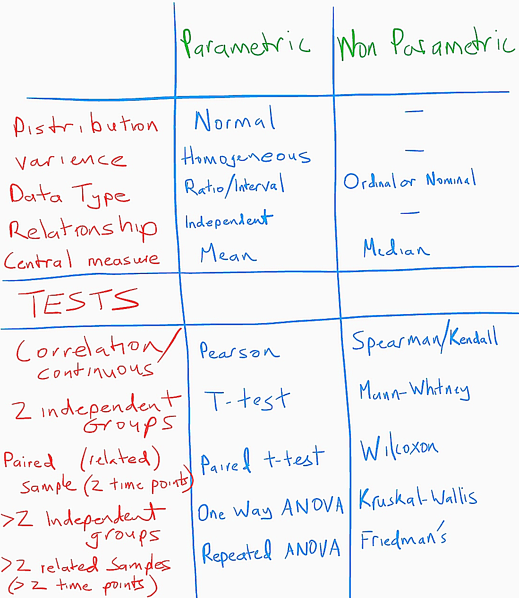

Brendan
November 1, 2020
Secondary School Student Performance
Introduction
I am writing this blog as part of an assignment. My Details:
| Student Name: | B Kent |
| Student Number: | cxxxxxxxx |
| Programme Code: | TU060 |
| Version R: | R version 4.0.3 (2020-10-10) |
| R packages: |
Getting started
We explore a student exam performance data set. This is a data set about secondary school academical achievements in Portugal. The data contains two sets of results, one set for results in Maths and one set for results in Portuguese. These are merged together to form one data set which I will endeavor to break down in order to learn about the basic properties of statistics, describing the frequencies and probabilities, hypothesis testing, Normality, Missing data, Relationships, Component Analysis and more.
This data set is from a paper by P.Cortez and A. Silva entitled “Using Data Mining to Predict Secondary School Student Performance”. (Cortez and Silva 2008)
We need to get the data
library("dplyr")
##
## Attaching package: 'dplyr'
## The following objects are masked from 'package:stats':
##
## filter, lag
## The following objects are masked from 'package:base':
##
## intersect, setdiff, setequal, union
library("tidyr")
library("viridis")
## Loading required package: viridisLite
library("finalfit") # for ff_glimpse(studentdf)
library("gridExtra") # for plots in a grid
##
## Attaching package: 'gridExtra'
## The following object is masked from 'package:dplyr':
##
## combine
library("ggplot2") # For creating histograms and plots
library("GGally") # for other plots
## Registered S3 method overwritten by 'GGally':
## method from
## +.gg ggplot2
library("stargazer")#For formatting outputs/tables
##
## Please cite as:
## Hlavac, Marek (2018). stargazer: Well-Formatted Regression and Summary Statistics Tables.
## R package version 5.2.2. https://CRAN.R-project.org/package=stargazer
#download.file(url="https://archive.ics.uci.edu/ml/machine-learning-databases/00320/student.zip", destfile="student.zip")
#unzip("student.zip",exdir = "studentdf")
list.files("studentdf")
## [1] "student-mat.csv" "student-merge.R" "student-por.csv" "student.txt"
data set description: https://archive.ics.uci.edu/ml/datasets/student+performance# or here
read in the data
matdf=read.table("studentdf/student-mat.csv",sep=";",header=TRUE, stringsAsFactors=TRUE)
pordf=read.table("studentdf/student-por.csv",sep=";",header=TRUE, stringsAsFactors=TRUE)
studentdf=merge(x=matdf,y=pordf,by=c("school","sex","age","address","famsize","Pstatus","Medu","Fedu","Mjob","Fjob","reason","nursery","internet"))
colnames(studentdf) <- tolower(colnames(studentdf))
nrow(studentdf)
[1] 382
So we have 382 records in our data set.
Let’s see what variables we have in each record.
colnames(studentdf)
## [1] "school" "sex" "age" "address" "famsize"
## [6] "pstatus" "medu" "fedu" "mjob" "fjob"
## [11] "reason" "nursery" "internet" "guardian.x" "traveltime.x"
## [16] "studytime.x" "failures.x" "schoolsup.x" "famsup.x" "paid.x"
## [21] "activities.x" "higher.x" "romantic.x" "famrel.x" "freetime.x"
## [26] "goout.x" "dalc.x" "walc.x" "health.x" "absences.x"
## [31] "g1.x" "g2.x" "g3.x" "guardian.y" "traveltime.y"
## [36] "studytime.y" "failures.y" "schoolsup.y" "famsup.y" "paid.y"
## [41] "activities.y" "higher.y" "romantic.y" "famrel.y" "freetime.y"
## [46] "goout.y" "dalc.y" "walc.y" "health.y" "absences.y"
## [51] "g1.y" "g2.y" "g3.y"
The data set measures the grades for each students achievements at three time intervals, g1, g2 and g3. So grades at g1 and g2 can been used to predict g3, and from the paper, it can be seen that there is a strong correlation between g3 and g2/g1.
let’s us pick a random student:
studentdf %>%
sample_n(1)
## school sex age address famsize pstatus medu fedu mjob fjob reason
## 1 GP F 17 U GT3 A 4 3 services services course
## nursery internet guardian.x traveltime.x studytime.x failures.x schoolsup.x
## 1 yes yes mother 1 2 0 no
## famsup.x paid.x activities.x higher.x romantic.x famrel.x freetime.x goout.x
## 1 yes yes no yes yes 5 2 2
## dalc.x walc.x health.x absences.x g1.x g2.x g3.x guardian.y traveltime.y
## 1 1 2 5 23 13 13 13 mother 1
## studytime.y failures.y schoolsup.y famsup.y paid.y activities.y higher.y
## 1 2 0 no yes no no yes
## romantic.y famrel.y freetime.y goout.y dalc.y walc.y health.y absences.y g1.y
## 1 yes 5 2 2 1 2 5 14 15
## g2.y g3.y
## 1 14 17
Population vs Sample
We are interested in finding results for the entire population of students that have completed exams in maths and Portuguese in Portugal, but we know that is not possible, so what we have is a sample. We will use this sample to infer things about the population as a whole.
The numbers used to describe a population are called parameters, whereas for our sample which is a subset of the pollution, we call them statistics.
Samples are collected because there are easier to contact, less time consuming and less costly.
However taking samples as shortcut to finding out answers about a population is always prone to sampling error.
We now need to ask ourselves some questions.
- Does our sample represent the population well?
- Is our sample biased?
In order to answer these questions, we need to explore the data. The first thing we know is that the size of the data set is 382. Usually the bigger the sample the more likely it is to reflect the whole population. It is not enough to simply use the number of records to tell us whether we have a sample that represents the population.
We need to have some understanding of the population in order to make this decision about our sample representing the population. First thing we know is that this data comes from two Portuguese schools, so if we find some statistics from this data set, we can’t say that this applies to students all over the world. We can only use this results as a pointer to further research.
We ask ourselves this question, because in the end we want to be able to create a model that describes the population, not a model which only describes the sample.
We will show later that there are many statistical tests we can do on a sample set of data to see if we can infer anything about the population. Also we will show that through the use of hypotheses testing we can decide whether there is a relationship in the sample data that is strong enough to use to model the relationship in the population.
Now to the 2nd question, a biased sample is one which differs from the population from which it is taken. This can happen if the sample is not collected randomly. If the students in this sample were picked, then it would not be a representative sample. There is a limit to this randomness, we have to acknowledge that, looking at the paper(Cortez and Silva 2008), we see that data was only collected during one year and only in two public schools. This year and these schools might not represent the population’s Portugese school system in other parts of the country and in other years. Doing a quick Google search I can see that these schools are in rural and less dense areas of Portugal.

We can also check the if the sample percentages match what we would imagine for a population, for example:
Let checks the students involved, are both sexes represented
counts:
## sex
## F M
## 198 184
Percentages
## sex
## F M
## 51.83 48.17
It is very important that when choosing a sample that any missing data is also random, that there is not pattern between the variables which are missing.
The most common types of Bias in data are:
- Selection Bias - When analyzing the data, I need to make sure I am not using only certain groups of students.
- Sampling Bias - caused if there is not random sampling, I assume some students did not give details or choose not to join, we miss these.
- Time interval Bias - our data was taken in 2014. It’s hard to say it still applies to now(2020), a lot has changed in student behaviour.
- Confirmation Bias - I didn’t choose this data, so I hope to avoid any confirmation bias.
- Omitted Variable Bias - there are many other variables which are not included which could be affecting grade results, such as stress, poverty etc.
To make good decisions to the questions outlined above, we will calculate some simple statistics for our sample. These statistics we will start to examine in the next section.
How to infer from a sample to a population
In order to show how well a sample is representing a population we need to understand some basics about the variables in our data set. Each variable falls into a “level of Measurement” category. There are 4 levels:
- Nominal - or Categorical, can we binary variables such as dead or alive or nominal like Guinness, Harp, Smithwicks.
- Ordinal - kinda of the same as nominal but have an order, like A,B,C for an exam result.
- Interval - have a score and the differences between these scores are equivalent.
- Ratio - same as interval but the score of say 12 must mean twice a score of 6. 0 has a meaning.
So depending on the variable of interest in the record, we can make small basic models to see if we can infer information about the population from it. The first is mean. First thing we should note is that you can only get a mean from variable which are either interval or Ratio (these types are referred to as numeric in here). The other types types such as Nominal and Ordinal don’t have a mean. They use other statistics to describe what we call a Central Tendency. Here is a table to explain:
| level | Mode | Median | Mean |
|---|---|---|---|
| Nominal | yes | no | no |
| Ordinal | yes | yes | no |
| Interval | yes | yes | yes |
| Ratio | yes | yes | yes |
The best measure of Central Tendency is Mean if it is available for that level. If not, then median and if not median then mode. However whether to choose mean or median depends on another term called “skew”. If a variable has skew then median may be better than mode.
To explain these levels, we will use examples in our data set. An example of a Nominal variable, a Numeric variable and a Ratio variable.
Ratio in the student data set is “g3”
32 G3 - final grade (numeric: from 0 to 20, output target)
Nominal in student data set is “reason”
11 reason - reason to choose this school (nominal: close to "home", school "reputation", "course" preference or "other")
Ordinal in student data set is “studytime”
14 studytime - weekly study time (numeric: 1 - <2 hours, 2 - 2 to 5 hours, 3 - 5 to 10 hours, or 4 - >10 hours)
G3 - Final Grade (Ratio)
In this section we will explore the variable G3 in our data set. The Grade G3 variable is a ratio variable because zero has a meaning in this variable. The grade results begins at zero and a student who got 16 did twice as well as a student who received 8.
Normal Distrubution
We would like to find a variable which has a normal distribution, because we can use parametric tests on this variable. This is ideal when we want to make inference from our sample to our population. These parametric tests are more powerful because they use all values a variable has. Let’s check if grade results fits the bill for us.
Finally we get to draw a chart. First the humble scatter plot:

Figure 2: G3 - final grade unsorted
Or if we sort the grades in ascending order.

Figure 3: G3 - final grade sorted
We can see here that there are grade marked as 0. We don’t know if that means the student didn’t do the exam or they got 0 after attempting it. That’s 10.21 % of the data.
To understand skew we need to starting visualizing the data. We do this by plotting what is known as a frequency distribution or histogram.

Figure 4: G3 - final grade histogram
From the Frequency distribution chart we can say that the zeros are outliers here, as we said above. WHy? because we expect the distribution for grade results to be normal, to match what we call a Normal Distrbtion. All normal distributions are symmetric and have bell-shaped density curves with a single peak. This histogram above is bimodal because of the zeros. We will remove those now, for all grade results.
These zeros which we find the grade results could also be a result of missing data. and now again we check the histogram

Figure 5: G3 - final grade histogram no zeros
This is much better. Let’s check the Central Tendency measure for this variable
Central Tendency
For G3 - final grade in maths
| stat | desc | value |
|---|---|---|
| mean | average | 11.5685131 |
| median | ranked in order of magnitude, find middle | 11 |
Dispersion
For G3 - final grade in maths
| stat | desc | value |
|---|---|---|
| Range | lowest and highest | 4, 20 |
| Quantiles | cut in 1/4ths | 4, 9, 11, 14, 20 |
| 1st quantile | 1st 1/4 | 4 |
| Interquartile Range | cut off the 1st 1/4 and last 1/4 | 5 |
| Variance | The average of the squared differences from the Mean | 10.772339 |
| Standard deviation | the square root of the variance | 3.2821242 |
There are two main ways in which a distribution can deviate from normal:
- lack of symmetry (called skew ) and
- pointyness (called kurtosis )
Like plot the histogram again and add a normal distribution curve using the grade scores:

Figure 6: G3 - final grade histogram with normal curve
From a look at this histogram we can say that the Skew is visible. We can see that there is positive skew. The kurtosis does not look to be a problem.
We not need to examine that skew in detail. There is another useful graph that we can inspect to see if a distribution is normal called a Q-Q plot (quantile–quantile plot). A quantile is the proportion of cases we find below a certain value.

Figure 7: G3 - final grade Q-Q plot
The closer the values fall on the diagonal of the plot, the closer the fit we have for a normal distribution.
We can get values now for Skew and kurtosis. The values of skew and kurtosis should be zero in a normal distribution. Positive values of skew indicate a postive skew. Positive values of kurtosis indicate a pointy distribution, whereas negative values indicate a flat distribution.
Generating some summary statistics of the varaible. There are two libraries in R for this: using psych::describe :
knitr::kable(stack(psych::describe(studentdf$g3.x)))
| values | ind |
|---|---|
| 1.0000000 | vars |
| 343.0000000 | n |
| 11.5685131 | mean |
| 3.2821242 | sd |
| 11.0000000 | median |
| 11.5018182 | trimmed |
| 2.9652000 | mad |
| 4.0000000 | min |
| 20.0000000 | max |
| 16.0000000 | range |
| 0.2096557 | skew |
| -0.4840774 | kurtosis |
| 0.1772180 | se |
using pastecs::stat.desc :
options(scipen=999)
knitr::kable(pastecs::stat.desc(studentdf$g3.x, basic = FALSE, norm = TRUE))
| x | |
|---|---|
| median | 11.0000000 |
| mean | 11.5685131 |
| SE.mean | 0.1772180 |
| CI.mean.0.95 | 0.3485745 |
| var | 10.7723390 |
| std.dev | 3.2821242 |
| coef.var | 0.2837118 |
| skewness | 0.2096557 |
| skew.2SE | 0.7960411 |
| kurtosis | -0.4840774 |
| kurt.2SE | -0.9216168 |
| normtest.W | 0.9787651 |
| normtest.p | 0.0000598 |
We divide the skew statistic by the standard error to get the standardised core for skew and kurtosis using semTools::skew :
tpskew<-semTools::skew(studentdf$g3.x)
tpskew
## skew (g1) se z p
## 0.2115020 0.1322600 1.5991380 0.1097899
and semTools::kurtosis :
tpkurt<-semTools::kurtosis(studentdf$g3.x)
tpkurt
## Excess Kur (g2) se z p
## -0.45855837 0.26452003 -1.73354877 0.08299818
Skew and kurtosis are converted to z-scores by dividing by the standard error:
tpskew[1]/tpskew[2]
## skew (g1)
## 1.599138
tpkurt[1]/tpkurt[2]
## Excess Kur (g2)
## -1.733549
Before exploring skew and kurtosis, we need to understand a key term “Confidence interval” and “Z-score”
Confidence interval
In statistics we use confidence intervals to show how sure we are that a value would fall in a range of values.
The common confidence intervals used are 90%, 95% and 99%. The idea is based on the Normal distribution. To say we are 95% confidence a value will fall into a range of values is the same as saying it will fall inside -1.96 standard deviations and +1.96 standard deviations of the mean. A 90% chance would correspond to 1.645 and a 99% chance would correspond to 2.576 deviations.
Which confidence interval we decide to use depends on the population variance and also the size of the sample. A wide variance in a population would mean a large confidence interval. Certain industries use different confidence intervals to report their results when they are doing tests to answers questions. For example pharmaceutical science or manufacturing companies may have a tighter cut off value. These tests usually involves fitting a statistical model to data and testing a prediction. To decide if the model works, they need to know if the result is statistically significant. To do this the confidence intervals are used, if the test result is outside these intervals, or above a certain alpha value (usually 0.05), it unlikely the model is getting the right answer by chance. We will discuss this more later in hypothesis testing. For educational data sets such as the one we are currently analyzing a standard alpha value is 0.05 because we are working with human beings and because of the measurement error in recording the values.
Z-score
We only need the standard deviation and mean to use Confidence Intervals. To help us understand what are the critical values and their related probabilities. We need to standardize our Normal Distribution. To do this, we use z-scores. A standard Normal distribution has a mean of zero and standard deviation of one. The z-score is a number on the horizontal which corresponds to a number of standard deviations. So a z-score of 3 means that we are 3 standard deviations from the mean to the right. A z-score also comes with a z-score table, we can use this to calculate the area under the standard normal distribution, this area will give us a probability (and of course there is tools in R to help so we never really need to check a table, although could be useful with electricity goes out). If our distribution is normal for a give variable, then these z-score make it real easy to see for each value the probability of getting that value and the distance the value is from the mean.
The critical values for a 95% confidence is -1.96 or +1.96 as we said above, these are the values in terms of z-score or standard deviations. If we get a z-score higher or lower than this, we know that that value is statistically unlikely.

Figure 8: Standard Normal Distribution
In the diagram above, you can see how a 95% confidence interval relates to a 1.96 z-score. 2.5% of the area is shaded in in blue, twice that on each side is 5% which is 100% - 5%.
In green you can also see the area which are divided by the -1.96 z-score. These areas are the probabilities or p-values of a event falling into that z-score range.
skew and kurtosis analysis
We would expect the calculation of skew and kurtosis to be at least less than approx absolute 2 (1.96 for a 95% confidence interval at p < .05). So what we need to do is check the z-score of skew. Above we calculated a skew of 1.599138. Putting that on our magnificent Standard Normal Distribution figure below. We see it falls in the p < 0.05 range.

Figure 9: Standard Normal Distribution for skew and kurtosis
We also calculated a kurtosis of -1.733549.
Sometimes a skew and kurtosis maybe outside our confidence range, however Discovery Statistics with R (2012) estimates that if we have a sample size of 200 or more, it may be more important to look at the shape of the distribution and pay less attention to these scores above.
We say the z-value is significant if it is in those blue regions of the figure above. Significant means important and in the case of skew or kurtosis it’s not good if it is very significant.
Another way Using skew.2SE from pastecs::stat.desc
We can determine if the skew is significant also, skew.2SE is 0.79604109916. This statistic is the skew divided by 2 standard errors. For this to be significant. skew.2SE must be greater than ~1 (or 1.96/2 which is 0.98). It’s not.
Using kurt.2SE from pastecs::stat.desc
kurtosis divided by 2 standard errors we have -0.92161679721. Again kurtosis is just greater than -1 or we could say the absolute value is less than 1.
Another way
In other to show another way of testing for skew and kurtosis which is called the Shapiro–Wilk test, we need an introduction to Hypothesis testing.
Hypothesis Testing
We make a hypothesis about the outcome of some experiment. We can make an example from our data set, let’s say students who have more “studytime” achieve better grades (“g3”).
We do the experiment. It’s already done, because we have the data.
H0: The Null hypothesis would be that “studytime” has no affect on grade results, that “studytime” makes no difference.
H1: The Alternative hypothesis would be the hypothesis we made above, that students who have more “studytime” achieve better grades.
Afterwards…
For both these hypothesisesesss:
We can either reject the hypothesis(we were wrong) or fail to reject the hypothesis(we are not completely wrong).
We would really like to reject the Null hypothesis.
In order to decide if we reject or fail to reject, we run the data through sometime called a statistical test.
There are two types of errors which can result form a hypothesis test 1. type I: when we reject the Null hypothesis when it is true, probability of committing a type I error is called the significance level, also called alpha. alpha for us is usually 0.05. But it’s depends on the area/industry. False Positive 2. type II: when we fail to reject the Null hypothesis when it is false, probability of committing a type I error is called beta. The probability of not committing type II is called the power. False Negative
I liked Wikipedia’s description of these: type I: “an innocent person is convicted” type II: “a guilty person is not convicted”
Figure 10: Type I and Type II Errors
The strength of the evidence of is determined by the measureed p-value of the test and by the region of acceptance.
Shapiro–Wilk test
Another way to check if our variable has a normal distribution is do the Shapiro–Wilk test.
This test compares the mean and standard deviation of our data to a normally distributed set of scores withe h same mean and standard deviation.
shapiro.test(studentdf$g3.x)
##
## Shapiro-Wilk normality test
##
## data: studentdf$g3.x
## W = 0.97877, p-value = 0.00005978
The test result shows the test statistic and the p-value.
The Null hypothesis is that there is no normal distribution in this data, it’s just random stuff. The alternative hypothesis is that it’s a normal distribution.
Our result has a very small p-value, so the probability that the Null hypothesis is true is tiny, so we can accept the Alternative.
A p-value of less than 0.05 is statistically significant here, so if our p-value was greater than 0.05. We could not reject H0.
This test along with the Kolmogorov-Smirnov test are usually not the greatest indicators to a varaible being non-normal. The best way to test for normality is outlined already in the section dispersion. When testing again for normality I will refer to this section.
Using Normal Distribution to find outliers
Now by calculating the percentage of standardized scores for the variable itself that are outside our acceptable range we can see how far they are away from being normal. Calculate the percentage of standardised scores that are greater than 1.96
ztpcoiss<- abs(scale(studentdf$g3.x))
FSA::perc(as.numeric(ztpcoiss), 1.96, "gt")
## [1] 4.081633
FSA::perc(as.numeric(ztpcoiss), 2.58, "gt")
## [1] 0
FSA::perc(as.numeric(ztpcoiss), 3.29, "gt")
## [1] 0
So 4% of our data lies outside 1.96 standard deviations of the mean or outside the 95% confidence range. 0% are outside of the 99% confidence interval and of course that means also 0% of our data lies outside the 99.9% confidence interval.
95% of our data is within the acceptable range, so we can treat the data as normal. üòå
Since our sample size is larger than 80, a case is an outlier if it’s standard score is +/- 3.29. So we have no outliers. HOwever at the moment we are ignoring missing data, that’s thr values we made NA earlier.
G3 Grades Summary
| Heuristic | value |
|---|---|
| Standarised score of skew | 1.599138 |
| Standarised score of kurtosis | -1.733549 |
| Standarised score of variables | 4.1 % outside +/- 1.96 |
| Standarised score of variables | 0% outside +/- 3.29 (no outliers) |
| Currently ignoring missing data. |
Reason (Nominal)
Reason has the following description in the data set.
11 reason - reason to choose this school (nominal: close to "home", school "reputation", "course" preference or "other")
As we explained earlier it is nominal because there is no ordering or direction in this variable. In the R language we call this column a factor.
The best way to visualize this variable is to use a pie chart, bar chart or a frequency table.

Figure 11: Count Pie chart for 11 reason
## reason n
## 1 course 140
## 2 home 110
## 3 other 34
## 4 reputation 98

Figure 12: Count Pie chart for 11 reason
Studytime (Ordinal)
Studytime has the following description in the data set.
14 studytime - weekly study time (numeric: 1 - <2 hours, 2 - 2 to 5 hours, 3 - 5 to 10 hours, or 4 - >10 hours)
It is ordinal because it has an order, but it is not interval because the different between each value is not the same, also we can’t add or subtract values.
From the join we did earlier with the data from the two subject, we have two columns of studytime, one for Maths(x) and one for Portuguese(y). Let’s compare them.
print("Length of studytime.x")
length(studentdf$studytime.x)
a <- is.na(studentdf$studytime.x)
print("Number of NA values in studytime.x")
length(a[a==TRUE])
print("Length of studytime.y")
length(studentdf$studytime.y)
a <- is.na(studentdf$studytime.y)
print("Number of NA values in studytime.y")
length(a[a==TRUE])
print("Are they equal? how many of different? ")
a <- sort(studentdf$studytime.x) == sort(studentdf$studytime.y)
length(a[a==FALSE])
## [1] "Length of studytime.x"
## [1] 382
## [1] "Number of NA values in studytime.x"
## [1] 0
## [1] "Length of studytime.y"
## [1] 382
## [1] "Number of NA values in studytime.y"
## [1] 0
## [1] "Are they equal? how many of different? "
## [1] 2
Ok, so 2 values in 382. Very similar. But we can see if are not dealing with exactly the same students.
In R, we can add the information from the levels in the description of studytime.x to the variable and we can do this for all similar type variables. In R these are known as ordinal factors.
studentdf$medu = factor(studentdf$medu,levels=c(0:4),labels = c("0 - none","1 - primary education (4th grade)","2 – 5th to 9th grade","3 – secondary education","4 – higher education"), ordered=T)
studentdf$fedu = factor(studentdf$fedu,levels=c(0:4),labels = c("0 - none","1 - primary education (4th grade)","2 – 5th to 9th grade","3 – secondary education","4 – higher education"), ordered=T)
studentdf$traveltime.x = factor(studentdf$traveltime.x,levels=c(1:4),labels = c("1 - <15 min", "2 - 15 to 30 min", "3 - 30 min. to 1 hour", "4 - >1 hour"), ordered=T)
studentdf$traveltime.y = factor(studentdf$traveltime.y,levels=c(1:4),labels = c("1 - <15 min", "2 - 15 to 30 min", "3 - 30 min. to 1 hour", "4 - >1 hour"), ordered=T)
studentdf$studytime.x = factor(studentdf$studytime.x,levels=c(1:4),labels = c("1 - <2 hours","2 - 2 to 5 hours", "3 - 5 to 10 hours","4 - >10 hours"), ordered=T)
studentdf$studytime.y = factor(studentdf$studytime.y,levels=c(1:4),labels = c("1 - <2 hours","2 - 2 to 5 hours", "3 - 5 to 10 hours","4 - >10 hours"), ordered=T)

Missing Data
Missing data can come as a result of sampling bias or selection bias. Missing data reduces the probability that the test will reject H0.
We can take a quick look at our data set and see if we have many NA values.
t <- sapply(studentdf, function(x) sum(is.na(x)))
t[t>0]
## g2.x g3.x g1.y g3.y
## 13 39 1 5
It is no surprise here at there is not many NAs. Looking back to [Get started] we merged the Maths and Portuguese results together using the variables “school”,“sex”,“age”,“address”,“famsize”,“Pstatus”,“Medu”,“Fedu”,“Mjob”,“Fjob”,“reason”,“nursery”,“internet”
Which means if any of these are missing, we won’t have them in our combined data frame. That means alot of the Portuguese grade data is not contained in the merged data frame.
Missing data reduces also how well sample represents the population, if we had a lot of missing data, it could also lead to invalid conclusions.
There are three possible patterns to missing data:
- Data missing at random (MAR) - missing data is not random, but not related to other variables
- Data missing completely at random (MCAR) - missing data is random, best scenario!
- Data not missing at random (MNAR) - not random, related to other variables, pretty serious!
Let us check if any of these patterns are seen in the data. The only variables with missing data are the grade results: g2 and g3 for Maths.
studentdf %>% filter(is.na(g3.x)) %>% summary()
## school sex age address famsize pstatus
## GP:34 F:23 Min. :15.00 R: 9 GT3:34 A: 2
## MS: 5 M:16 1st Qu.:16.00 U:30 LE3: 5 T:37
## Median :17.00
## Mean :17.05
## 3rd Qu.:18.00
## Max. :19.00
##
## medu fedu
## 0 - none : 0 0 - none : 0
## 1 - primary education (4th grade): 8 1 - primary education (4th grade):13
## 2 – 5th to 9th grade :14 2 – 5th to 9th grade :10
## 3 – secondary education : 9 3 – secondary education : 6
## 4 – higher education : 8 4 – higher education :10
##
##
## mjob fjob reason nursery internet guardian.x
## at_home : 9 at_home : 3 course :20 no : 9 no : 7 father: 9
## health : 2 health : 0 home :13 yes:30 yes:32 mother:26
## other :15 other :21 other : 1 other : 4
## services: 7 services:11 reputation: 5
## teacher : 6 teacher : 4
##
##
## traveltime.x studytime.x failures.x
## 1 - <15 min :22 1 - <2 hours :13 Min. :0.0000
## 2 - 15 to 30 min :12 2 - 2 to 5 hours :17 1st Qu.:0.0000
## 3 - 30 min. to 1 hour: 4 3 - 5 to 10 hours: 6 Median :1.0000
## 4 - >1 hour : 1 4 - >10 hours : 3 Mean :0.9231
## 3rd Qu.:1.5000
## Max. :3.0000
##
## schoolsup.x famsup.x paid.x activities.x higher.x romantic.x famrel.x
## no :38 no :14 no :31 no :19 no : 7 no :19 Min. :1.000
## yes: 1 yes:25 yes: 8 yes:20 yes:32 yes:20 1st Qu.:3.000
## Median :4.000
## Mean :3.795
## 3rd Qu.:5.000
## Max. :5.000
##
## freetime.x goout.x dalc.x walc.x
## Min. :1.000 Min. :1.000 Min. :1.000 Min. :1.000
## 1st Qu.:3.000 1st Qu.:2.000 1st Qu.:1.000 1st Qu.:1.000
## Median :3.000 Median :3.000 Median :1.000 Median :1.000
## Mean :3.103 Mean :3.128 Mean :1.333 Mean :1.821
## 3rd Qu.:4.000 3rd Qu.:4.000 3rd Qu.:2.000 3rd Qu.:2.000
## Max. :5.000 Max. :5.000 Max. :3.000 Max. :5.000
##
## health.x absences.x g1.x g2.x g3.x
## Min. :1.000 Min. :0 Min. : 4.000 Min. : 5.000 Min. : NA
## 1st Qu.:2.500 1st Qu.:0 1st Qu.: 6.000 1st Qu.: 5.250 1st Qu.: NA
## Median :4.000 Median :0 Median : 7.000 Median : 7.000 Median : NA
## Mean :3.641 Mean :0 Mean : 7.462 Mean : 7.115 Mean :NaN
## 3rd Qu.:5.000 3rd Qu.:0 3rd Qu.: 9.000 3rd Qu.: 8.750 3rd Qu.: NA
## Max. :5.000 Max. :0 Max. :12.000 Max. :10.000 Max. : NA
## NA's :13 NA's :39
## guardian.y traveltime.y studytime.y
## father: 9 1 - <15 min :20 1 - <2 hours :13
## mother:26 2 - 15 to 30 min :13 2 - 2 to 5 hours :17
## other : 4 3 - 30 min. to 1 hour: 5 3 - 5 to 10 hours: 6
## 4 - >1 hour : 1 4 - >10 hours : 3
##
##
##
## failures.y schoolsup.y famsup.y paid.y activities.y higher.y
## Min. :0.0000 no :37 no :15 no :38 no :17 no : 7
## 1st Qu.:0.0000 yes: 2 yes:24 yes: 1 yes:22 yes:32
## Median :0.0000
## Mean :0.3333
## 3rd Qu.:0.0000
## Max. :3.0000
##
## romantic.y famrel.y freetime.y goout.y dalc.y
## no :19 Min. :1.000 Min. :1.000 Min. :1.000 Min. :1.000
## yes:20 1st Qu.:3.000 1st Qu.:3.000 1st Qu.:2.000 1st Qu.:1.000
## Median :4.000 Median :3.000 Median :3.000 Median :1.000
## Mean :3.846 Mean :3.205 Mean :3.179 Mean :1.308
## 3rd Qu.:5.000 3rd Qu.:4.000 3rd Qu.:4.000 3rd Qu.:2.000
## Max. :5.000 Max. :5.000 Max. :5.000 Max. :3.000
##
## walc.y health.y absences.y g1.y
## Min. :1.000 Min. :1.000 Min. : 0.000 Min. : 5.00
## 1st Qu.:1.000 1st Qu.:3.000 1st Qu.: 0.000 1st Qu.: 9.00
## Median :2.000 Median :4.000 Median : 4.000 Median :11.00
## Mean :1.897 Mean :3.615 Mean : 5.179 Mean :10.62
## 3rd Qu.:2.000 3rd Qu.:5.000 3rd Qu.: 6.500 3rd Qu.:12.00
## Max. :5.000 Max. :5.000 Max. :22.000 Max. :16.00
##
## g2.y g3.y
## Min. : 7.00 Min. : 6.00
## 1st Qu.: 9.00 1st Qu.:10.00
## Median :11.00 Median :12.00
## Mean :10.67 Mean :11.43
## 3rd Qu.:12.00 3rd Qu.:13.00
## Max. :14.00 Max. :15.00
## NA's :2
Because our data set is relatively large, we don’t expect missing data to have a serious impact. It all goes back to being representative of the population.
In R we have a library called finalfit which has the function ff_glimpse, which we can use to identify missing data.
studentdf %>%
select(age,mjob,g3.y,reason) %>%
ff_glimpse()
## $Continuous
## label var_type n missing_n missing_percent mean sd min quartile_25
## age age <int> 382 0 0.0 16.6 1.2 15.0 16.0
## g3.y g3.y <int> 377 5 1.3 12.7 2.6 1.0 11.0
## median quartile_75 max
## age 17.0 17.0 22.0
## g3.y 13.0 14.0 19.0
##
## $Categorical
## label var_type n missing_n missing_percent levels_n
## mjob mjob <fct> 382 0 0.0 5
## reason reason <fct> 382 0 0.0 4
## levels levels_count
## mjob "at_home", "health", "other", "services", "teacher" 53, 33, 138, 96, 62
## reason "course", "home", "other", "reputation" 140, 110, 34, 98
## levels_percent
## mjob 13.9, 8.6, 36.1, 25.1, 16.2
## reason 36.6, 28.8, 8.9, 25.7
Missing data can also include outliers, I will discuss these if when at any time in my analysis I have a distribution which is close to normal. We can look for outliers and remove them. Missing data and outliers are similar. Missing data if it is significant in our data set could reduce the the probability of rejecting the null hypothesis and so we could end up with a Type II error also known as a false negative.
During the next section, mostly I am going to ignore missing data, which is one of the things we can do with missing data.
Relationships
Before we continue to examine relationships in our data set. We need to discuss the type of tests we can conduct. Depending on the variables types we have a choice of either parametric or non-parametric
-
Parametric tests are usually more powerful than non-parametric because we use all the data, they need to pass some assumptions: ** Must be Normally distributed (skew and kurtosis… outliers) ** Homogeneity of variance (Levenes test or Barletts test, Barletts test has better performance if we sure our data is strongly normal) ** Interval data or Ratio ** Independent
-
Non-parametric tests don’t need to pass the same assumptions, variables do not need to be normally distributed. Most of these tests work on the principle of ranking.
Below I have organized a list of the statistical tests which apply to each search question. I will explain these in the following sections where I will show an example of each.

Figure 13: Types of test data and types of Analysis
We will first look at correlations that describes the association between two variables and later t-tests which examine where there is a significant difference between two groups. The tools I use in R will use a t-test to assess the strength of evidence against the null hypothesis, which is that there is no correlation.
I have read many times that in order to look at relationships in a data set probably we must first ask the questions, it is very bad practice to look and the data and try to work backwards to determine relationships. We must set our alpha level also before beginning.
Questions
The questions I have for this section are:
- Is there a linear correlation between the G2 result and the G3 result for Maths? (Pearson) (paramteric)
- Is there a linear correlation between the number of school absences and the G3 result? (Spearman + Kendall) (non paramteric)
- Grade results in students with a family size greater than 3 differed from those with a smaller family size. (t-test)
- Is there a difference between grade 1 and grade 3 in Maths for students who paid for extra classes? (paired t-test)
- Is there a difference in the health of the students between the students who’s address is rural vs urban?
- Does the reason for choosing the school impact the the final grade in Portugese?
- Are there any differences between each student’s mother’s Education and their Final Grade result in Maths including the zero results.
- Is there a difference between the male and females students in terms of their ambition to go to higher education?
Correlation (G2 and G3)
Looking at the two variables for Maths. Please refer to [skew-and-kurtosis-analysis] for the g3 analysis of Maths. Looking at g2, I know there is some missing data but a very small amount. We need to check the standardized scores for skewness and kurtotsis and plot the histogram and Q-Q plot.
studentdf %>%
ggplot(aes(x=g2.x)) +
labs(x="G2 results for Maths") +
geom_histogram( binwidth=1, colour="black", aes(y=..density.., fill=..count..)) +
scale_fill_gradient("Count", low="grey", high="green") +
stat_function(fun=dnorm, color="red",args=list(mean=mean(studentdf$g2.x, na.rm=TRUE), sd=sd(studentdf$g2.x, na.rm=TRUE)))

Figure 14: G2 results Histogram
#Create a qqplot
qqnorm(studentdf$g2.x)
qqline(studentdf$g2.x, col=2) #show a line on theplot

Figure 15: G2 results Q-Q plot
pastecs::stat.desc(studentdf$g2.x, basic=F)
tpskew<-semTools::skew(studentdf$g2.x)
tpkurt<-semTools::kurtosis(studentdf$g2.x)
tpskew[1]/tpskew[2]
tpkurt[1]/tpkurt[2]
## median mean SE.mean CI.mean.0.95 var std.dev
## 11.0000000 11.0894309 0.1727429 0.3396871 11.0110021 3.3182830
## coef.var
## 0.2992293
## skew (g1)
## 1.661684
## Excess Kur (g2)
## -2.320396
The values of skew is good at 1.661684. The Kurtosis is high at -2.320396. We next calculate the percentage of standardized scores that our outside our acceptable range to tell us how big our problem is.
In the histogram, earlier I converted all 0 grades to NA, so in our data for g2.x and g3.x, there are 12 NAs and 39 NA respectively. I will ignore them.
studentdf %>%
filter(is.na(g2.x)) %>%
group_by(g2.x) %>%
summarise(n = n())
## `summarise()` ungrouping output (override with `.groups` argument)
## # A tibble: 1 x 2
## g2.x n
## <int> <int>
## 1 NA 13
studentdf %>%
filter(is.na(g3.x)) %>%
group_by(g3.x) %>%
summarise(n = n())
## `summarise()` ungrouping output (override with `.groups` argument)
## # A tibble: 1 x 2
## g3.x n
## <int> <int>
## 1 NA 39
zstabsences<- abs(scale(studentdf$g2.x))
FSA::perc(as.numeric(zstabsences), 1.96, "gt")
FSA::perc(as.numeric(zstabsences), 3.29, "gt")
## [1] 4.336043
## [1] 0
At 0.05 level, we need 95% of our data to exist within the bounds of a z-score of 1.96 in order to say it is safe to treat our variable as normal. Since only 4.33 % of my variable g2.x is outside of 1.96 standard deviations and because this sample size is large. The following are outliers at 1.96 SDs, these students did really well!
studentdf %>%
mutate(zscale = scale(g2.x)) %>%
filter(zscale > 1.96 | zscale < -1.96) %>%
select(zscale, g1.x,g2.x,g3.x)
## zscale g1.x g2.x g3.x
## 1 2.082574 18 18 18
## 2 2.082574 18 18 18
## 3 2.082574 18 18 19
## 4 2.082574 17 18 18
## 5 2.082574 16 18 18
## 6 2.082574 19 18 18
## 7 2.082574 16 18 19
## 8 2.383934 18 19 19
## 9 2.383934 18 19 19
## 10 2.082574 18 18 18
## 11 2.082574 18 18 18
## 12 2.082574 16 18 18
## 13 2.082574 16 18 18
## 14 2.383934 19 19 20
## 15 2.082574 17 18 18
## 16 2.082574 19 18 19
I can treat this as normal and I have no outliers to remove. From earlier analysis we know that g3.x can also be treated as nornal.
G2 Grades Summary:
| Heuristic | value |
|---|---|
| Standarised score of skew | 1.661684 |
| Standarised score of kurtosis | -2.320396 |
| Standarised score of variables | 4.33 % outside +/- 1.96 |
| Standarised score of variables | 0% outside +/- 3.29 (no outliers) |
| Currently ignoring missing data. | 12 NAs |
Correlation Scatter plot (G2 and G3):
studentdf %>%
ggplot(aes(x=g2.x, y=g3.x)) +
geom_point() +
geom_smooth(method = "lm", colour = "Green", se = F) +
labs(x = "Grade at Time Inteval 2", y = "Final Grade at Time Inteval 3")
## `geom_smooth()` using formula 'y ~ x'

Figure 16: Grades at 2 time intervals
There are three varieties of Correlation test I can perform on g2 and g3.
- Pearson
- Spearman
- Kendall
Which I choose to use depends alot on the domain of my analysis. I want to use a correlation test which can be compared with other tests conducted in the same domain. Because both variables are continuous and normal Pearson is a clear choice, but for learning purposes lets look at each below. For Pearson coefficient we make some assumptions; a) our data is continuous (which it is), b) our two variables are paired (we hope they are, although analysis of the data set would say maybe not all are paired) and c) the two grades are independent. d) they should be homoscedasticity (from the plot we can see there is, the variances should be similar as you move along the line, the opposite is heteroscedasticity)
#Pearson Correlation
cor.test(studentdf$g2.x, studentdf$g3.x, method='pearson')
##
## Pearson's product-moment correlation
##
## data: studentdf$g2.x and studentdf$g3.x
## t = 70.015, df = 341, p-value < 0.00000000000000022
## alternative hypothesis: true correlation is not equal to 0
## 95 percent confidence interval:
## 0.9592617 0.9731820
## sample estimates:
## cor
## 0.9669345
The correlation coefficient is a commonly used measure of the size of an effect: values of ±.1 represent a small effect, ±.3 is a medium effect and ±.5 is a large effect
Spearman and Kandal are only needed if our data did not fit a normal distribution. Below I will report Spearman’s rank correlation rho and Kendall’s rank correlation tau:
cor.test(studentdf$g2.x, studentdf$g3.x, method = "spearman")
##
## Spearman's rank correlation rho
##
## data: studentdf$g2.x and studentdf$g3.x
## S = 254064, p-value < 0.00000000000000022
## alternative hypothesis: true rho is not equal to 0
## sample estimates:
## rho
## 0.962224
cor.test(studentdf$g2.x, studentdf$g3.x, method = "kendall")
##
## Kendall's rank correlation tau
##
## data: studentdf$g2.x and studentdf$g3.x
## z = 22.796, p-value < 0.00000000000000022
## alternative hypothesis: true tau is not equal to 0
## sample estimates:
## tau
## 0.895293
To report Pearson coefficient here we say:
343 student grades at two time intervals, Time 1 G2(M=11.09, SD=3.32) and Time 2 G3(M=11.57, SD=3.28) were investigated. A positive Pearson r correlation coefficient of 0.97 was revealed. There is strong correlation between g2 results and the final grade g3 with t(341) = 70 with a p-value < 0.001. The size of the effect is large.
Correlation (absences and G3)
Again we will use hypothesis testing to determine if there is a correlation between the number of school absences and the G3 result. To make a correlation, we use tests which give us a correlation coefficient, r. This coefficient tells us the strength and the direction of the linear relationship between the number of school absences and the G3 result.
Once we get this correlation coefficient, r, we need to then check if it is statistically significant and whether it can be used to apply to the population.
We start as always with stating the Null and alternative hypothesis:
H0: There is NOT a significant linear relationship between the number of school absences for Maths and the Maths G3 result.
Ha: There IS a significant linear relationship between the number of school absences for Maths and the Maths G3 result.
We have already studied G3 in the previous section for normality. Let’s study number of school absences now.
print("Length of absences.x in Maths")
length(studentdf$absences.x)
a <- is.na(studentdf$absences.x)
print("Number of NA values in absences.x in Maths")
length(a[a==TRUE])
print("Length of absences.y in Portuguese")
length(studentdf$absences.y)
a <- is.na(studentdf$absences.y)
print("Number of NA values in absences.y in Portuguese")
length(a[a==TRUE])
print("Are they equal? how many of different? ")
a <- sort(studentdf$absences.x) == sort(studentdf$absences.y)
length(a[a==FALSE])
## [1] "Length of absences.x in Maths"
## [1] 382
## [1] "Number of NA values in absences.x in Maths"
## [1] 0
## [1] "Length of absences.y in Portuguese"
## [1] 382
## [1] "Number of NA values in absences.y in Portuguese"
## [1] 0
## [1] "Are they equal? how many of different? "
## [1] 210
studentdf %>%
filter(absences.x < 40,
absences.y < 40) %>%
select(absences.x, absences.y) %>%
gather(key=Type, value=Value) %>%
ggplot(aes(x=Value,fill=Type)) +
labs(x="number of school absences") +
geom_density(binwidth=1, alpha=0.3, position="dodge")

Figure 17: Density histogram for School absences in Maths
Ok, so I continue with Maths absences.
studentdf %>%
ggplot(aes(x=absences.x)) +
labs(x="number of school absences for Maths") +
geom_histogram( binwidth=1, colour="black", aes(y=..density.., fill=..count..)) +
scale_fill_gradient("Count", low="grey", high="green") +
stat_function(fun=dnorm, color="red",args=list(mean=mean(studentdf$absences.x, na.rm=TRUE), sd=sd(studentdf$absences.x, na.rm=TRUE)))

Figure 18: School absences for Maths
pastecs::stat.desc(studentdf$absences.x, basic=F)
tpskew<-semTools::skew(studentdf$absences.x)
tpkurt<-semTools::kurtosis(studentdf$absences.x)
tpskew[1]/tpskew[2]
tpkurt[1]/tpkurt[2]
zstabsences<- abs(scale(studentdf$absences.x))
FSA::perc(as.numeric(zstabsences), 1.96, "gt")
FSA::perc(as.numeric(zstabsences), 3.29, "gt")
## median mean SE.mean CI.mean.0.95 var std.dev
## 3.0000000 5.3193717 0.3901418 0.7671006 58.1444531 7.6252510
## coef.var
## 1.4334872
## skew (g1)
## 32.26225
## Excess Kur (g2)
## 106.969
## [1] 3.403141
## [1] 0.7853403
The question we need to ask is our distribution normal? we can see it’s not normal, how far away is it from normal? Standardised scores for skewness and kurtosis between -2 and +2 are considered acceptable in order to prove normal univariate distribution. So our values of skew and kurtosis are far outside of normal as can be seen in the the figures above. Therefore we cannot use Pearson coefficient this time. I will use Spearman’s rank correlation and Kendall’s rank correlation.
studentdf %>%
ggplot(aes(x=absences.x, y=g3.x)) +
geom_point() +
geom_smooth(method = "lm", colour = "Blue", se = F) +
labs(x = "Number of absenses in Maths", y = "Final Grade at Time Inteval 3 for Maths")
## `geom_smooth()` using formula 'y ~ x'

Looking at this plot I can see that I have a high degree of homoscedasticity.
Using Spearman:
cor.test(studentdf$absences.x, studentdf$g3.x, method = "spearman")
##
## Spearman's rank correlation rho
##
## data: studentdf$absences.x and studentdf$g3.x
## S = 8503896, p-value = 0.0000006768
## alternative hypothesis: true rho is not equal to 0
## sample estimates:
## rho
## -0.2644176
The correlation coefficient between the two variables is moderate at -0.26. It indicates a negative relationship, so the more absent days you have, the worse your G3 results. The significance value is very small at p < 0.001, so we can reject the NUll hypothesis that there is no relationship.
We could use Kendall also, Kendall is used rather that Spearman when the data set is small and is also useful when the many values of a variables are similar. Kendall produces a Tau.
cor.test(studentdf$absences.x, studentdf$g3.x, method = "kendall")
##
## Kendall's rank correlation tau
##
## data: studentdf$absences.x and studentdf$g3.x
## z = -4.9694, p-value = 0.0000006714
## alternative hypothesis: true tau is not equal to 0
## sample estimates:
## tau
## -0.1980571
The result is a coefficient that is closer to zero. The significance of the result is the same as Spearman.
Grade G3(M=11.57, SD=3.28) results were significantly related with school absences(Mdn = 3.0000000), tau = 0.2, p < 0.001.
T-Test (G3 and family size)
The question for this section is:
Grade results in students with a family size greater than 3 differed from those with a smaller family size.
The variables involved are g3.x which is a ratio type and famsize which is a Nominal type varible.
We have investigated g3.x in previous sections already, let us look at the famsize variable. The description of the data set says:
5 famsize - family size (binary: 'LE3' - less or equal to 3 or 'GT3' - greater than 3)
studentdf %>%
group_by(famsize) %>%
count(famsize)
## # A tibble: 2 x 2
## # Groups: famsize [2]
## famsize n
## <fct> <int>
## 1 GT3 278
## 2 LE3 104
We have no missing
studentdf %>%
count(famsize) %>%
mutate(total = sum(n)) %>%
group_by(famsize) %>%
mutate(perc = round((n/total)*100)) %>%
ggplot(aes(x="", y=perc, fill=famsize)) +
geom_bar(stat="identity", width=1, color="white") +
coord_polar("y", start=0) +
theme_void() + # remove background, grid, numeric labels
geom_text(aes(label = paste(perc, " %" )), color = "white", fontface = "bold", position = position_stack(vjust = 0.5)) +
labs(title="G3 Results vs family size", caption="'LE3' - less or equal to 3 or 'GT3' - greater than 3")

Figure 19: G3 Results vs family size
Now to plot a histograms for each group. One group is families with more than 3 and the other group is family with less than or equal to 3. We have seen teh distrubtuion for g3 maths results already by now to look at those distributions when we spearate them by famsize.
studentdf %>%
ggplot(aes(x=g3.x)) +
facet_wrap(vars(famsize)) +
geom_histogram(binwidth=2, colour="black") +
scale_fill_gradient("Count", low="#DCDCDC", high="#7C7C7C")

Figure 20: Family Size vs Maths Grade 3 results
psych::describeBy(studentdf$g3.x, studentdf$famsize, mat=TRUE)
## item group1 vars n mean sd median trimmed mad min max range
## X11 1 GT3 1 244 11.47541 3.265263 11 11.41837 2.9652 4 20 16
## X12 2 LE3 1 99 11.79798 3.328847 12 11.71605 2.9652 5 19 14
## skew kurtosis se
## X11 0.1964338 -0.4780809 0.2090371
## X12 0.2324757 -0.5688868 0.3345617
The values of skew and kurtotsis reported by the two are within the acceptable range for both to be considered normal.
Looking at the Test Table, we have a normal distribution variable and 2 independent groups, so our choice of test will be the t-test. One of the assumptions for a t-test is that we have homogeneity of variance. Homogeneous, or equal, variance exists when the standard deviations of samples are approximately equal.
The t-test produces two values as its output: t-value and degrees of freedom. Higher values of the t-value, also called t-score, indicate that a large difference exists between the two sample sets. The smaller the t-value, the more similarity exists between the two sample sets. Degrees of freedom, we will deal with again, it is essentially the number of observations in the data that are free to vary when estimating statistical parameters. It is essential for assessing the importance and the validity of the null hypothesis.
I will state the two hypothesis for this test:
H0: There is no difference in results for a student with a big family to one with a smaller family
Ha: There is a difference in results for a student with a big family to one with a smaller family
We now conduct Levene’s test for homogeneity of variance using the library car. The null hypothesis is that variances in groups are equal so to assume homogeneity we would expect probability to not be statistically significant.
car::leveneTest(g3.x ~ famsize, data=studentdf)
## Levene's Test for Homogeneity of Variance (center = median)
## Df F value Pr(>F)
## group 1 0.1794 0.6722
## 341
The result gave a p-value of 0.6722, so we cannot reject the Null hypothesis. Therefore it is concluded that there is no difference between the variance in our sample and in the population.
studentdf %>%
ggplot(aes(x = as.numeric(row.names(studentdf)), y = g3.x, color=famsize)) +
geom_point(size=2) +
labs(y="G3 - final grade")

Figure 21: G3 - final grade and Family Size scatter plot
p1 <- studentdf %>%
ggplot(aes(x=famsize, y=g3.x, fill=famsize)) +
geom_boxplot() +
scale_fill_viridis(discrete = TRUE, alpha=0.6) +
geom_jitter(color="black", size=0.4, alpha=0.9) +
ggtitle("A boxplot with Family size and the Grade 3 results") +
ylab("Grade 3 results")
p2 <- studentdf %>%
ggplot(aes(x=famsize, y=g3.x, fill=famsize)) +
geom_violin() +
scale_fill_viridis(discrete = TRUE, alpha=0.6) +
geom_jitter(color="black", size=0.4, alpha=0.9) +
ggtitle("A volin plot with Family size and the Grade 3 results") +
ylab("Grade 3 results")
grid.arrange(p1, p2, ncol=2)

Figure 22: Violin and Box plots for family size
Now we conduct the t-test using the stats package. Because our variance in g3.x passed the Levee’s test, we can set var.equal = TRUE and then the stats::t.test function will not use the welsh modification.
stats::t.test(g3.x~famsize, var.equal=TRUE, data=studentdf)
##
## Two Sample t-test
##
## data: g3.x by famsize
## t = -0.82439, df = 341, p-value = 0.4103
## alternative hypothesis: true difference in means is not equal to 0
## 95 percent confidence interval:
## -1.0922059 0.4470659
## sample estimates:
## mean in group GT3 mean in group LE3
## 11.47541 11.79798
Out of interest, let’s check the result with the welsh modification:
stats::t.test(g3.x~famsize, var.equal=FALSE, data=studentdf)
##
## Welch Two Sample t-test
##
## data: g3.x by famsize
## t = -0.81767, df = 178.48, p-value = 0.4146
## alternative hypothesis: true difference in means is not equal to 0
## 95 percent confidence interval:
## -1.1010488 0.4559088
## sample estimates:
## mean in group GT3 mean in group LE3
## 11.47541 11.79798
The t-test yielded a p-value of 0.41 meaning that no statistically significant difference was found.
To quantify the effect we look for the Effect size. We have saw one of these already with Pearsons Coefficient, Another is Cohen’s d, Cohen’s d can be used as an effect size statistic for a two-sample t-test.

res <- stats::t.test(g3.x~famsize, var.equal=TRUE, data=studentdf)
#Calculate Cohen's d
#artithmetically
effcd=round((2*res$statistic)/sqrt(res$parameter),2)
#Using function from effectsize package
effectsize::t_to_d(t = res$statistic, res$parameter)
## d | 95% CI
## ---------------------
## -0.09 | [-0.30, 0.12]
Eta squared

effes=round((res$statistic*res$statistic)/((res$statistic*res$statistic)+(res$parameter)),3)
effes
## t
## 0.002
Figure 23: Cohen’s d and Eta
Reporting the results with Cohen’s d effect An independent-samples t-test was conducted to compare Maths grade 2 results for students who had families less than or equal to 3 and those who had families greater than 3. No significant difference in the Maths grades was found (M= 11.80, SD= 3.23 for students with a family size less than or equal to 3, M=11.48, SD= 3.27 for students who had families greater than 3), t(341) = -0.82, p = 0.41. Cohen’s d also indicated a very weak effect size (-0.09).
Reporting the results with eta squred effect An independent-samples t-test was conducted to compare Maths grade 2 results for students who had families less than or equal to 3 and those who had families greater than 3. No significant difference in the Maths grades was found (M= 11.80, SD= 3.23 for students with a family size less than or equal to 3, M=11.48, SD= 3.27 for students who had families greater than 3), t(341) = -0.82, p = 0.41. A very small effect size was also indicted by the eta squared value (0.002).
Paired t-test
Question:
Is there a difference between grade 1 and grade 3 in Maths for students who paid for extra classes?
We have already inspected G3 in Maths for normality, I will quickly show that G1 is also normal.
studentdf %>%
ggplot(aes(x=g1.x)) +
labs(x="G1 results for Maths") +
geom_histogram( binwidth=1, colour="black", aes(y=..density.., fill=..count..)) +
scale_fill_gradient("Count", low="grey", high="green") +
stat_function(fun=dnorm, color="red",args=list(mean=mean(studentdf$g1.x, na.rm=TRUE), sd=sd(studentdf$g1.x, na.rm=TRUE)))

Figure 24: G1 results for Maths
#Create a qqplot
qqnorm(studentdf$g1.x)
qqline(studentdf$g1.x, col=2) #show a line on theplot

Figure 25: G1 results for Maths
pastecs::stat.desc(studentdf$g1.x, basic=F)
tpskew<-semTools::skew(studentdf$g1.x)
tpkurt<-semTools::kurtosis(studentdf$g1.x)
tpskew[1]/tpskew[2]
tpkurt[1]/tpkurt[2]
## median mean SE.mean CI.mean.0.95 var std.dev
## 10.5000000 10.8612565 0.1713583 0.3369264 11.2169202 3.3491671
## coef.var
## 0.3083591
## skew (g1)
## 2.205097
## Excess Kur (g2)
## -2.742249
Skew and kurtosis are both significant, because they are above 1.96 standard deviations on the z-scale. Need to investigate how big a problem we have.
zg1<- abs(scale(studentdf$g1.x))
FSA::perc(as.numeric(zg1), 1.96, "gt")
## [1] 3.403141
FSA::perc(as.numeric(zg1), 3.29, "gt")
## [1] 0
3.4 % of values are outside 1.96. 0 % of the values are outside 3.29, these would be considered serious outliers. Let’s check what these values outside 1.96 are:
studentdf %>%
mutate(zscale = scale(g1.x)) %>%
filter(zscale > 1.96 | zscale < -1.96) %>%
select(zscale, g1.x,g2.x,g3.x)
## zscale g1.x g2.x g3.x
## 1 -2.048646 4 NA NA
## 2 2.131498 18 18 18
## 3 2.131498 18 18 18
## 4 2.131498 18 18 19
## 5 2.430080 19 18 18
## 6 2.131498 18 19 19
## 7 2.131498 18 19 19
## 8 2.131498 18 18 18
## 9 2.131498 18 18 18
## 10 2.430080 19 19 20
## 11 -2.347227 3 5 5
## 12 2.430080 19 18 19
## 13 2.131498 18 16 16
One poor student had a bad result and missed the others for g2 and g3. Since we are dealing with a large sample set and we have no serious outliers. We shall use the full set of Maths g1 results.
So the last variable of question here is a categorical one:
18 paid - extra paid classes within the course subject (Math or Portuguese) (binary: yes or no)
We are interested in the variable for Maths.
studentdf %>%
count(paid.x)
## paid.x n
## 1 no 205
## 2 yes 177
So what we have in total is one categorical independent variable and one continuous variable measured at two times(G1 adn G3). Looking again at the Test Table. Because our continuous variable is normal, we can use the parametric Paired T-test.
We start as always with stating the Null and alternative hypothesis:
H0: There is NOT a significant difference between grade 1 and grade 3 in Maths for students who paid for classes.
Ha: There IS a significant difference between grade 1 and grade 3 in Maths for students who paid for classes.
So lets look at the subset of these Grades where students had paid classes and a quick check to make sure they’re still normal data.
paid_students_maths <- studentdf %>%
filter(paid.x == "yes")
paid_students_maths %>%
ggplot(aes(x=g1.x)) +
labs(x="G1 results for Maths") +
geom_histogram( binwidth=1, colour="black", aes(y=..density.., fill=..count..)) +
scale_fill_gradient("Count", low="grey", high="green") +
stat_function(fun=dnorm, color="red",args=list(mean=mean(paid_students_maths$g1.x, na.rm=TRUE), sd=sd(paid_students_maths$g1.x, na.rm=TRUE)))

Figure 26: G1 results for Maths for Paid extra classes
#Create a qqplot
qqnorm(paid_students_maths$g1.x)
qqline(paid_students_maths$g1.x, col=2) #show a line on theplot

Figure 27: Q-Q plot G1 results for Maths for Paid extra classes
pastecs::stat.desc(paid_students_maths$g1.x, basic=F)
tpskew<-semTools::skew(paid_students_maths$g1.x)
tpkurt<-semTools::kurtosis(paid_students_maths$g1.x)
tpskew[1]/tpskew[2]
tpkurt[1]/tpkurt[2]
## median mean SE.mean CI.mean.0.95 var std.dev
## 11.0000000 11.0000000 0.2246380 0.4433309 8.9318182 2.9886148
## coef.var
## 0.2716923
## skew (g1)
## 1.382106
## Excess Kur (g2)
## -2.053623
paid_students_maths %>%
ggplot(aes(x=g3.x)) +
labs(x="G3 results for Maths") +
geom_histogram( binwidth=1, colour="black", aes(y=..density.., fill=..count..)) +
scale_fill_gradient("Count", low="grey", high="green") +
stat_function(fun=dnorm, color="red",args=list(mean=mean(paid_students_maths$g3.x, na.rm=TRUE), sd=sd(paid_students_maths$g3.x, na.rm=TRUE)))

Figure 28: G3 results for Maths for Paid extra classes
#Create a qqplot
qqnorm(paid_students_maths$g3.x)
qqline(paid_students_maths$g3.x, col=2) #show a line on theplot

Figure 29: Q-Q plot G3 results for Maths for Paid extra classes
pastecs::stat.desc(paid_students_maths$g3.x, basic=F)
tpskew<-semTools::skew(paid_students_maths$g3.x)
tpkurt<-semTools::kurtosis(paid_students_maths$g3.x)
tpskew[1]/tpskew[2]
tpkurt[1]/tpkurt[2]
## median mean SE.mean CI.mean.0.95 var std.dev
## 11.0000000 11.4082840 0.2349161 0.4637678 9.3263595 3.0539089
## coef.var
## 0.2676922
## skew (g1)
## 1.358554
## Excess Kur (g2)
## -0.6134903
stats::t.test(paid_students_maths$g1.x,paid_students_maths$g3.x,paired=TRUE)
##
## Paired t-test
##
## data: paid_students_maths$g1.x and paid_students_maths$g3.x
## t = -2.4368, df = 168, p-value = 0.01586
## alternative hypothesis: true difference in means is not equal to 0
## 95 percent confidence interval:
## -0.48199751 -0.05054687
## sample estimates:
## mean of the differences
## -0.2662722
res <- stats::t.test(paid_students_maths$g1.x,paid_students_maths$g3.x,paired=TRUE)
effes=round((res$statistic*res$statistic)/((res$statistic*res$statistic)+(res$parameter)),3)
effes
## t
## 0.034
The result is that we don’t see a significant difference. We cannot reject the Null hypothesis because the p-value is greater than our alpha (0.05).
“A paired-samples t-test was conducted for the students who got paid classes for the time intervals G1(M=11, SD=2.99) and G3 (M=11.41, SD=3.1). The means increased by 0.266 with a 95% confidence interval ranging from 0.49 to 0.051. Test result was t(168) = -2.44 and p-value was 0.016. The result is not significant at p < .05. The Eta squared statistic (0.034) indicated a small effect size”
I would have expected a significant difference here since we are paying for extra classes. But perhaps we started paying for classes before the first Grade G1. Also there are other things which could have contributed to the difference or lack of difference between these grades.
Mann-Whitney (Health for Rural vs Urban)
The question:
Is there a difference in the health of the students between the students who’s address is rural vs urban?
I need to compare both Maths and Portuguese. Let’s see if our health results are the same:
print("Length of health.x in Maths")
length(studentdf$health.x)
a <- is.na(studentdf$health.x)
print("Number of NA values in health.x in Maths")
length(a[a==TRUE])
print("Length of health.y in Portuguese")
length(studentdf$health.y)
a <- is.na(studentdf$health.y)
print("Number of NA values in health.y in Portuguese")
length(a[a==TRUE])
print("Are they equal? how many of different? ")
a <- sort(studentdf$health.x) == sort(studentdf$health.y)
length(a[a==FALSE])
## [1] "Length of health.x in Maths"
## [1] 382
## [1] "Number of NA values in health.x in Maths"
## [1] 0
## [1] "Length of health.y in Portuguese"
## [1] 382
## [1] "Number of NA values in health.y in Portuguese"
## [1] 0
## [1] "Are they equal? how many of different? "
## [1] 3
So 3 in 382 are different. Which isn’t even 1%. I will take Maths.
studentdf %>%
ggplot(aes(x = as.numeric(row.names(studentdf)), y = health.x, color=address)) +
geom_point(size=2) +
labs(y="Health (1 bad - 5 good)", x="student number")

Figure 30: Health for Urban and Rural students
studentdf %>%
ggplot(aes(x=address, y=health.x, fill=address)) +
geom_boxplot() +
scale_fill_viridis(discrete = TRUE, alpha=0.6) +
geom_jitter(color="black", size=0.4, alpha=0.9) +
ggtitle("A boxplot with Address and Health") +
ylab("Grade 3 results")

Figure 31: Health for Urban and Rural students
studentdf %>%
ggplot(aes(x=health.x)) +
labs(x="Health on scale from 1-5") +
geom_histogram( binwidth=1, colour="black", aes(y=..density.., fill=..count..)) +
scale_fill_gradient("Count", low="grey", high="blue") +
stat_function(fun=dnorm, color="red",args=list(mean=mean(studentdf$health.x, na.rm=TRUE), sd=sd(studentdf$health.x, na.rm=TRUE)))

Figure 32: Health histogram for Urban and Rural students
pastecs::stat.desc(studentdf$health.x, basic=F)
tpskew<-semTools::skew(studentdf$health.x)
tpkurt<-semTools::kurtosis(studentdf$health.x)
tpskew[1]/tpskew[2]
tpkurt[1]/tpkurt[2]
zstabsences<- abs(scale(studentdf$health.x))
FSA::perc(as.numeric(zstabsences), 1.96, "gt")
FSA::perc(as.numeric(zstabsences), 3.29, "gt")
studentdf %>%
group_by(address) %>%
mutate(mdn = median(health.x),
iqr = IQR(health.x)) %>%
group_by(address, mdn, iqr) %>%
summarise()
## `summarise()` regrouping output by 'address', 'mdn' (override with `.groups` argument)
## median mean SE.mean CI.mean.0.95 var std.dev
## 4.00000000 3.57853403 0.07164864 0.14087628 1.96100782 1.40035989
## coef.var
## 0.39132222
## skew (g1)
## -4.214329
## Excess Kur (g2)
## -4.019741
## [1] 0
## [1] 0
## # A tibble: 2 x 3
## # Groups: address, mdn [2]
## address mdn iqr
## <fct> <int> <dbl>
## 1 R 4 2
## 2 U 4 2
This health variable is highly skewed. We cannot consider it normal, therefore we must use non-parametric tests. Looking again at the Test Table. We have two independent groups, which are students who live Urban and those who live in Rural. So we choose the Mann Whitney.
We start as always with stating the Null and alternative hypothesis:
H0: There is NO difference in the health of the students in the rural group and the Urban group
Ha: There is a difference in the health of the students in the rural group and the Urban group
wilcox.test(health.x~address, data = studentdf)
##
## Wilcoxon rank sum test with continuity correction
##
## data: health.x by address
## W = 12473, p-value = 0.7397
## alternative hypothesis: true location shift is not equal to 0
Wilcoxon rank sum test tells us the difference is not significant and with a p-value of 0.74, we cannot reject the Null hypothesis. We now need to calculate Rosenthal’s r:

We need a z-score for this. We can use qnorm() to get it from the p-value. The z-value is -0.3322507 and N is 382. Rosenthal’s r is then -0.0169994
Reporting: “Health levels for students who had an Urban address(Mdn = 4 IQR = 2) did not differ significantly from those who had an Rural address(Mdn=4 IQR=2). Rosenthal‚Äôs r indicates a small effect. (U = 12473, z = 0.33, p = .74, r = 0.17)
My Analysis is that this should have been quite clear from the box plot and was only worth going this far to demonstrate a Mann-Whitney test.
ANOVA (Reason vs Final Grade in Portuguese )
The question:
Does the reason for choosing the school impact the the final grade in Portugese?
The variables:
11 reason - reason to choose this school (nominal: close to 'home', school 'reputation', 'course' preference or 'other')
32 G3 - final grade (numeric: from 0 to 20, output target)
For this question, we are dealing with multiple groups. It is a comparison of more than 2 samples. Our G3 needs ot be tested to see that it’s parametric, if it does we can see in the Test Table that we can use ANOVA. ANOVA is another analysis technique which compares again the mean, but it also uses the variance of the data to decide if the means are different.
ANOVA requires on independent categorical variables, which is “reason” and one continuous ratio variable which will be “Grade 3”. ANOVA produces a F-statistic, which is similiar to t-statistic from the t-test. Quick check to make sure g3.y is normal.
studentdf %>%
ggplot(aes(x=g3.y)) +
labs(x="G3 results for Portuguese") +
geom_histogram( binwidth=1, colour="black", aes(y=..density.., fill=..count..)) +
scale_fill_gradient("Count", low="grey", high="blue") +
stat_function(fun=dnorm, color="red",args=list(mean=mean(studentdf$g3.y, na.rm=TRUE), sd=sd(studentdf$g3.y, na.rm=TRUE)))

Figure 33: G3 results for Portuguese
#Create a qqplot
qqnorm(studentdf$g3.y)
qqline(studentdf$g3.y, col=2) #show a line on theplot

Figure 34: G3 results for Portuguese
pastecs::stat.desc(studentdf$g3.y, basic=F)
tpskew<-semTools::skew(studentdf$g3.y)
tpkurt<-semTools::kurtosis(studentdf$g3.y)
tpskew[1]/tpskew[2]
tpkurt[1]/tpkurt[2]
zg3<- abs(scale(studentdf$g3.y))
print("% greater than 1.96 SDs")
FSA::perc(as.numeric(zg3), 1.96, "gt")
print("% greater than 3.29 SDs")
FSA::perc(as.numeric(zg3), 3.29, "gt")
## median mean SE.mean CI.mean.0.95 var std.dev
## 13.0000000 12.6816976 0.1331154 0.2617439 6.6803290 2.5846332
## coef.var
## 0.2038081
## skew (g1)
## -1.356756
## Excess Kur (g2)
## 2.741779
## [1] "% greater than 1.96 SDs"
## [1] 5.039788
## [1] "% greater than 3.29 SDs"
## [1] 0.265252
Skew is good, Kurtosis is high. Will check outliers. 0.26% are outliers outside a 3.29 z-score. Removing these outliers:
studentdf %>%
mutate(zscale = scale(g3.y)) %>%
filter(zscale > 3.29 | zscale < -3.29) %>%
select(zscale, g3.y)
reasondf <- studentdf %>%
mutate(zscale = scale(g3.y)) %>%
filter(zscale < 3.29 | zscale > -3.29)
## zscale g3.y
## 1 -4.519673 1
Turns out it is only one outlier. A Portuguese grade 3 result of 1.

Figure 35: A boxplot withReason for attending the school and the Grade 3 results for Portuguese

Figure 36: A Density histogram with Reason for attending the school and the Grade 3 results for Portuguese
Grade 3 results for Portuguese was assessed for normality. Visual inspection of the histogram and QQ-Plot (see Figures above) identified some issues with skewness and kurtosis. The standardised score for skewness (-1.4) can be considered acceptable using the criteria proposed by West, Finch and Curran (1996), however the standardised score for kurtosis (2.74) was outside the acceptable range. After removing one outlier, 100% of standardised scores for Grade 3 results fall within the bounds of +/- 3.29, using the guidance of Field, Miles and Field (2013) the data can be considered to approximate a normal distribution (m=12.68, sd=2.58, n=377).
We start as always with stating the Null and alternative hypothesis:
H0: There is NO difference in the Grade 3 result between each student’s reason for choosing the school.
Ha: There is a difference in the Grade 3 result between each student’s reason for choosing the school.
psych::describeBy(reasondf$g3.y, reasondf$reason, mat=TRUE)
## item group1 vars n mean sd median trimmed mad min max
## X11 1 course 1 139 12.33094 2.622059 12 12.36283 2.9652 1 18
## X12 2 home 1 109 12.75229 2.384968 13 12.71910 2.9652 6 19
## X13 3 other 1 31 12.48387 3.020717 12 12.68000 2.9652 5 18
## X14 4 reputation 1 98 13.16327 2.555342 13 13.08750 2.9652 8 19
## range skew kurtosis se
## X11 17 -0.39548179 1.39899482 0.2224002
## X12 13 0.01566512 0.28286829 0.2284385
## X13 13 -0.44458398 -0.06402159 0.5425368
## X14 11 0.21608432 -0.78488847 0.2581285
There are two methods to use to check for homogeneity of the variance, Levene’s test and Bartlett’s test. Now I need to test for homogeneity of variance. Using Levene’s test, our Null hypothesis is that there is no difference in variance.
car::leveneTest(g3.y ~ reason, data=reasondf)
## Levene's Test for Homogeneity of Variance (center = median)
## Df F value Pr(>F)
## group 3 0.9607 0.4113
## 373
The null is not rejected and so we can consider the data to have homogeneity of variance. For Bartlett’s test, the null hypothesis is that variances in groups are equal so to assume homogeneity we would expect probability to not be statistically significant, just like Levenes.
stats::bartlett.test(g3.y~ reason, data=reasondf)
##
## Bartlett test of homogeneity of variances
##
## data: g3.y by reason
## Bartlett's K-squared = 2.9964, df = 3, p-value = 0.3922
p-value is > 0.05 so the result is not statistically significant so we can assume homogeneity from this test also.
Levene’s test is usually more robust to data which departs from normality. For Barlett’s test the data must be normally distributed.
Now we conduct ANOVA using the package userfriendlyscience and the method oneway and also with stats::aov In this case we can use Tukey as the post-hoc test option since variances in the groups are equal. This is similar to the welsh modification(var.equal) in the t-test, where we needed to know if there was homogeneity of the variance also. If the variances in the groups were not equal we would use Games-Howell
userfriendlyscience::oneway(reasondf$reason,y=reasondf$g3.y,posthoc='Tukey')
## Registered S3 methods overwritten by 'lme4':
## method from
## cooks.distance.influence.merMod car
## influence.merMod car
## dfbeta.influence.merMod car
## dfbetas.influence.merMod car
## Registered S3 methods overwritten by 'ufs':
## method from
## grid.draw.ggProportionPlot userfriendlyscience
## pander.associationMatrix userfriendlyscience
## pander.dataShape userfriendlyscience
## pander.descr userfriendlyscience
## pander.normalityAssessment userfriendlyscience
## print.CramersV userfriendlyscience
## print.associationMatrix userfriendlyscience
## print.confIntOmegaSq userfriendlyscience
## print.confIntV userfriendlyscience
## print.dataShape userfriendlyscience
## print.descr userfriendlyscience
## print.ggProportionPlot userfriendlyscience
## print.meanConfInt userfriendlyscience
## print.multiVarFreq userfriendlyscience
## print.normalityAssessment userfriendlyscience
## print.regrInfluential userfriendlyscience
## print.scaleDiagnosis userfriendlyscience
## print.scaleStructure userfriendlyscience
## print.scatterMatrix userfriendlyscience
## ### Oneway Anova for y=g3.y and x=reason (groups: course, home, other, reputation)
##
## Omega squared: 95% CI = [NA; .04], point estimate = .01
## Eta Squared: 95% CI = [0; .04], point estimate = .02
##
## SS Df MS F p
## Between groups (error + effect) 41.59 3 13.86 2.09 .101
## Within groups (error only) 2470.22 373 6.62
##
##
## ### Post hoc test: Tukey
##
## diff lwr upr p adj
## home-course 0.42 -0.43 1.27 .576
## other-course 0.15 -1.17 1.47 .991
## reputation-course 0.83 -0.04 1.71 .069
## other-home -0.27 -1.62 1.08 .956
## reputation-home 0.41 -0.51 1.34 .660
## reputation-other 0.68 -0.69 2.05 .576
The outcome is not significant so there is no need ot look at the post hoc test results.
# Compute the analysis of variance
res.aov <- stats::aov(g3.y~ reason, data = reasondf)
# Summary of the analysis
summary(res.aov)
## Df Sum Sq Mean Sq F value Pr(>F)
## reason 3 41.6 13.862 2.093 0.101
## Residuals 373 2470.2 6.623
aoveta<-sjstats::eta_sq(res.aov)
aoveta
## term etasq
## 1 reason 0.017
Checking Eta with the Effect Table
Reporting the results with eta squared effect An one-way between-groups analysis of variance (ANOVA) was conducted to to explore the impact of the reason for attending a school the Final Grades in Portuguese. Students were divided into four groups based on their reason for attending the school (close to ‘home’, school ‘reputation’, ‘course’ preference or ‘other’). No statistically significant difference in the final grades and associated reason was found (M=12.33, SD=2.6 for reason course, M=12.75, SD=2.4 for reason home, M=12.48, SD=3.0 for reason other and M=13.16, SD=2.6 for reason reputation) , (F(3, 373) = 2.09, p = .101). A small effect size was also indicated by the eta squared value (0.017).
Kruskal-Wallis (Mother’s Education and Maths G3)
The question:
Are there any differences between each student’s mother’s Education and their Final Grade result in Maths including the zero results.
9 Mjob - mother's job (nominal: "teacher", "health" care related, civil "services" (e.g. administrative or police), "at_home" or "other")
32 G3 - final grade (numeric: from 0 to 20, output target)
I know from previous analysis that Final Grade results for Maths is only normal when we remove the zero results. For this test I will leave them in.
studentdf %>%
ggplot(aes(x=g3.x.all)) +
labs(x="G3 results for Maths") +
geom_histogram( binwidth=1, colour="black", aes(y=..density.., fill=..count..)) +
scale_fill_gradient("Count", low="grey", high="green") +
stat_function(fun=dnorm, color="red",args=list(mean=mean(studentdf$g3.x.all, na.rm=TRUE), sd=sd(studentdf$g3.x.all, na.rm=TRUE)))

Figure 37: G3 results Histogram
pastecs::stat.desc(studentdf$g3.x.all, basic=F)
tpskew<-semTools::skew(studentdf$g3.x.all)
tpkurt<-semTools::kurtosis(studentdf$g3.x.all)
tpskew[1]/tpskew[2]
tpkurt[1]/tpkurt[2]
## median mean SE.mean CI.mean.0.95 var std.dev
## 11.0000000 10.3874346 0.2398202 0.4715368 21.9702354 4.6872418
## coef.var
## 0.4512415
## skew (g1)
## -5.63212
## Excess Kur (g2)
## 1.108522
So with skewed data we must use a non-parametric test. We also want to compare more than 2 groups, so our choice of test is the Kruskal Wallis Test. The test determines whether the medians of two or more groups are different.
We now check for homogeneity of variance
We will use levene’s test since our variable has a high skew. Using Levene’s test, our Null hypothesis is that there is no difference in variance.
car::leveneTest(g3.x.all ~ mjob, data=studentdf)
## Levene's Test for Homogeneity of Variance (center = median)
## Df F value Pr(>F)
## group 4 0.1934 0.9418
## 377
p-value is > 0.05 so the result is not statistically significant so we can assume homogeneity from this test also.
studentdf %>%
ggplot(aes(x=mjob, y=g3.x.all, fill=mjob)) +
geom_boxplot() +
scale_fill_viridis(discrete = TRUE, alpha=0.6) +
geom_jitter(color="black", size=0.4, alpha=0.9) +
ggtitle("A boxplot with Grade 3 Maths and Mother's job") +
ylab("Grade 3 results")

Figure 38: G3 vs Mother’s Job Box Plot
We start as always with stating the Null and alternative hypothesis:
H0: There is NO difference in the Grade 3 results achieved based on the student’s Mother’s education.
Ha: There is a difference in the Grade 3 results achieved based on the student’s Mother’s education.
psych::describeBy(as.numeric(studentdf$g3.x.all),factor(studentdf$mjob))
##
## Descriptive statistics by group
## group: at_home
## vars n mean sd median trimmed mad min max range skew kurtosis se
## X1 1 53 8.85 4.88 10 9.05 2.97 0 19 19 -0.54 -0.42 0.67
## ------------------------------------------------------------
## group: health
## vars n mean sd median trimmed mad min max range skew kurtosis se
## X1 1 33 12.06 4.26 13 12.44 2.97 0 20 20 -1.07 1.56 0.74
## ------------------------------------------------------------
## group: other
## vars n mean sd median trimmed mad min max range skew kurtosis se
## X1 1 138 9.76 4.46 10.5 10.17 3.71 0 19 19 -0.79 0.17 0.38
## ------------------------------------------------------------
## group: services
## vars n mean sd median trimmed mad min max range skew kurtosis se
## X1 1 96 11.32 4.69 11 11.72 4.45 0 19 19 -0.68 0.28 0.48
## ------------------------------------------------------------
## group: teacher
## vars n mean sd median trimmed mad min max range skew kurtosis se
## X1 1 62 10.76 4.73 10.5 11.22 3.71 0 19 19 -0.68 0.32 0.6
Now we will run the Kruskal-Wallis test
#run a kruskal wallis test
stats::kruskal.test(g3.x.all~mjob,data=studentdf)
##
## Kruskal-Wallis rank sum test
##
## data: g3.x.all by mjob
## Kruskal-Wallis chi-squared = 18.036, df = 4, p-value = 0.001214
The test statistic produced is called Kruskal-Wallis chi-squared and is referred to as H.
With a p-value of 0.0012, we have found a statistic significantly different, so we can reject the Null Hypothesis. They are not the same. But we don’t know yet from the Kruskal-Wallis which groups are different, to do that we need to do a post hox test. For one-way ANOVA we used the turkey test, this time we use the dunnTest as a post hoc test in the package FSA to produce a comparison of the different groups with a bonferroni correction. We can then identify what’s different.
We use the bonferroni correction to adjust the p-values of the comparisons, because of the increased risk of type I error (rejecting the null when it’s true), which happens when we make multiple tests. Essentially the bonferroni correction is dividing our alpha by the number of comparisons. But we can’t win them all, as soon as we reduce the chances of getting a type I error we increase the chances of getting a type II error.
#Post hoc testing
#Need library FSA to run the post-hoc tests
tmp<-FSA::dunnTest(x=as.numeric(studentdf$g3.x.all), g=factor(studentdf$mjob), method="bonferroni")
#Print results so that in the output X=gradmath, g=ethsfr and the test statistic is Z with significance shown underneath
print(tmp, dunn.test.results = TRUE)
## Kruskal-Wallis rank sum test
##
## data: x and g
## Kruskal-Wallis chi-squared = 18.0359, df = 4, p-value = 0
##
##
## Comparison of x by g
## (Bonferroni)
## Col Mean-|
## Row Mean | at_home health other services
## ---------+--------------------------------------------
## health | -3.318018
## | 0.0091*
## |
## other | -1.251233 2.753460
## | 1.0000 0.0590
## |
## services | -3.166986 0.960381 -2.556461
## | 0.0154* 1.0000 0.1057
## |
## teacher | -2.126460 1.568341 -1.279406 0.884750
## | 0.3346 1.0000 1.0000 1.0000
##
## alpha = 0.05
## Reject Ho if p <= alpha
The test statistic is Z and underneath is the corrected p-value. Now we can see which comparisons are significantly different. Mother’s job in health and Mother’s job at home are significantly different. and also Mother’s job in services and Mother’s job at home are significantly different.
Now we need an effect size for eta squared.
#calculate the effect size
rstatix::kruskal_effsize(studentdf, g3.x.all~mjob, ci = FALSE, conf.level = 0.95,
ci.type = "perc", nboot = 1000)#uses bootstrapping
## # A tibble: 1 x 5
## .y. n effsize method magnitude
## * <chr> <int> <dbl> <chr> <ord>
## 1 g3.x.all 382 0.0372 eta2[H] small
Reporting
An Kruskal-Wallis test between groups was conducted to explore the impact of a Mother‚Äôs Job title on a student‚Äôs Final Maths results. Students were divided into four groups based on their mother‚Äôs job title(‚Äúteacher‚Äù, ‚Äúhealth‚Äù care related, civil ‚Äúservices‚Äù (e.g.¬†administrative or police), ‚Äúat_home‚Äù or ‚Äúother‚Äù), the box plots of each can be seen in this Figure (Media:10.5 for ‚Äúteacher‚Äù, Median:13 for ‚Äúhealth‚Äù , Median:11 for ‚Äúservices‚Äù Median:10 ‚Äúat_home‚Äù, Median:10.5 for “other). The groups were significantly different. H(4) = 18.04, p = .001. A small effect size was also indicated by the eta squared value (0.037).
Focused comparisons of the mean ranks between groups showed that the Mother’s job title were only significant in two comparisons. THe first was when the mother’s job was at home, the Final grade results in Maths were lower in comparison to a mother working in the health service. The second was not as significant but still significant, when a mother’s job was at home, the final grade result was lower in comparison to a mother working in civil service. In summary, a students got better grades when their mother worked in the health or civil service sector rather than working at home.
Chi Square ( male/female higher education )
The Question:
- Is there a difference between the male and females students in terms of their ambition to go to higher education?
the variables:
2 sex - student's sex (binary: "F" - female or "M" - male)
21 higher - wants to take higher education (binary: yes or no)
Choosing the right test:
We are comparing ordinal variables here between two groups. I will use Portuguese higher values. So it is obvious we won’t be able to use a parametric test here. Our outcome variable “higher” is not continuous and so not a normal distribution. The Independent variable sex is categorical. This is different to previous questions, as my outcome variable was continuous. Our choice here is to use the Chi-square test. Like all non-parametric statistics, the Chi-square is robust with respect to the distribution of the data, it doesn’t require homoscedasticity. The CHi-square test will show us if there is significant difference in our groups, it is then followed with a strength statistic.
We start as always with stating the Null and alternative hypothesis:
H0: There is NO difference between the male and females students in terms of their ambition to go to higher education.
Ha: There is a difference between the male and females students in terms of their ambition to go to higher education.
studentdf %>%
ggplot( aes(x=higher.y)) +
geom_histogram(stat="count", fill="#69b3a2", color="#69b3a2", position = 'identity') +
facet_wrap(~sex) +
labs(fill="")

Figure 39: Study times for males/females
We will use the gmodels CrossTable function to compare the frequencies, this is how we make our comparisons, by comparing the expected frequency for a population to the observed one. This function will execute two types of tests, the fisher and the chi-square tests.
library(gmodels)
#Use the Crosstable function
#CrossTable(predictor, outcome, fisher = TRUE, chisq = TRUE, expected = TRUE)
gmodels::CrossTable(studentdf$sex, studentdf$higher.y, fisher = TRUE, chisq = TRUE, expected = TRUE, sresid = TRUE, format = "SPSS")
# #more simplistic way of doing Chi-Square
##
## Cell Contents
## |-------------------------|
## | Count |
## | Expected Values |
## | Chi-square contribution |
## | Row Percent |
## | Column Percent |
## | Total Percent |
## | Std Residual |
## |-------------------------|
##
## Total Observations in Table: 382
##
## | studentdf$higher.y
## studentdf$sex | no | yes | Row Total |
## --------------|-----------|-----------|-----------|
## F | 3 | 195 | 198 |
## | 9.330 | 188.670 | |
## | 4.294 | 0.212 | |
## | 1.515% | 98.485% | 51.832% |
## | 16.667% | 53.571% | |
## | 0.785% | 51.047% | |
## | -2.072 | 0.461 | |
## --------------|-----------|-----------|-----------|
## M | 15 | 169 | 184 |
## | 8.670 | 175.330 | |
## | 4.621 | 0.229 | |
## | 8.152% | 91.848% | 48.168% |
## | 83.333% | 46.429% | |
## | 3.927% | 44.241% | |
## | 2.150 | -0.478 | |
## --------------|-----------|-----------|-----------|
## Column Total | 18 | 364 | 382 |
## | 4.712% | 95.288% | |
## --------------|-----------|-----------|-----------|
##
##
## Statistics for All Table Factors
##
##
## Pearson's Chi-squared test
## ------------------------------------------------------------
## Chi^2 = 9.356621 d.f. = 1 p = 0.002221813
##
## Pearson's Chi-squared test with Yates' continuity correction
## ------------------------------------------------------------
## Chi^2 = 7.936827 d.f. = 1 p = 0.004843871
##
##
## Fisher's Exact Test for Count Data
## ------------------------------------------------------------
## Sample estimate odds ratio: 0.1740415
##
## Alternative hypothesis: true odds ratio is not equal to 1
## p = 0.002789078
## 95% confidence interval: 0.03175236 0.6300058
##
## Alternative hypothesis: true odds ratio is less than 1
## p = 0.001921514
## 95% confidence interval: 0 0.5366559
##
## Alternative hypothesis: true odds ratio is greater than 1
## p = 0.9997088
## 95% confidence interval: 0.04228962 Inf
##
##
##
## Minimum expected frequency: 8.670157
Notes from the crosstable:
- The Row Total column adds up Male and Female to 100%.
- Minimum expected frequency is greater than 5. THe values is: 8.670157. So the test is meaningful and we don;t need to use Fisher’s Exact Probability Test.
Now we execute the Chi-Square test with the Yates correction. We use the Yates correction for the same reason as we used the bonferroni correction in the previous question, we want to prevent making a Type I error (a false positive). It simply subtracts 0.5 from the difference between each observed value and it’s expected value in a 2 X 2 table. This reduces the chi-squared value obtained and thus increases its p-value, there is controversy regarding using the Yates correction, maybe have wrote that it overcorrects. (Haviland 1990)
THe test statistic for chi-square is known as x2. In our test x2 is 7.9368, degrees of freedom is 1 and our p-value is 0.004844. This is a significant difference based on our 0.05 alpha value between the two sexes. We can now reject the Null Hypothesis. This significant result indicates there is a difference between the sex of a student and their ambitions for higher education. The result reflects the fact that when females were asked if they planned to do higher education 98.5% said yes and only 1.5% said no, whereas for males when asked, 92% said yes and 8% said no.
Calculating the effect size, we calculate both a Phi effect size and Cramers effect size (which for our test are the same):
#Create your contingency table
mytable<-xtabs(~higher.y+sex, data=studentdf)
ctest<-stats::chisq.test(mytable, correct=TRUE)#chi square test
#correct=TRUE to get Yates correction needed for 2x2 table
#ctest#will give you the details of the test statistic and p-value
ctest$expected#expected frequencies
ctest$observed#observed frequencies
ctest$p.value
#Calculate effect size
sjstats::phi(mytable)
sjstats::cramer(mytable)
## sex
## higher.y F M
## no 9.329843 8.670157
## yes 188.670157 175.329843
## sex
## higher.y F M
## no 3 15
## yes 195 169
## [1] 0.004843871
## [1] 0.1565049
## [1] 0.1565049
Reporting:
Using the Chi-square test for independence (with Yates Continuity Correction) there was a significant association between the gender of the student and their reported ambition to do higher education x2(1, n=382) = 7.94, p = .0048, phi = 0.156. The effect size is small.
Modelling
In this section we will discuss predictive modeling. Predictive models are used to explore the relationships between one outcome variable and a set of independent predictors. Before exploring this relationship, there should be a sound theoretical reason for using the predictive variables, the idea of fishing for a relationship by trial and error is a bad idea. Ideally we would need statistical evidence to include a variable as a predictor. So for our model we will use past data to predict new outcome varibles.
What is linear Regression?
The simplest regression is linear regression. This is where we are predicting an outcome variable from a predictor variable. We do this by fitting a statistical model to the data in the form of a straight line. Then we need to gauge how well that line fits the data. The equation of the line is
e is the error which varies randomly for the data. It shows us that the lines does not fit perfectly for all data points. a is the intercept and the point where the line crosses the y-axis. b is the slope of the line which is the gradient, it represents the amount of change the outcome variable goes through for one unit change in the predictor variable. As a basic strategy for predicting an outcome, we could choose the mean. We can then calculate R2, which is a ratio of the SSM over SST.
Figure 40: How R squared is Calculated
We can also use a test statistic to determine how good our model is, by using ANOVA and it’s F-statistic. This is best shown by doing an example using our data set. We know from my analysis earlier in section Correlation (G2 and G3) that there is a strong correlation between the Maths grades at G2 and G3. So we want to determine whether a grade at time G2 is the main predictor of a students score at G3(Final grade). In R, the response (outcome) variable is g2.x and the predictor variable is g3.x. It is good practice to standard this grades, so I will do that now:
Total number of samples:
## n
## 1 382
Before proceeding with linear regression, there are a few assumptions: 1. That there is a relationship, a linear one between the variables 2. Homoscedasticity (we can do this visually or with a test) 3. Independent observations 4. The residual errors should follow a normal distribution (this is the space between the linear line model and the data point)
Visuals for scale_g2.x (already done in Correlation (G2 and G3), but putting them here again for completeness)

Figure 41: G2 with scale results Histogram
## V1
## median -0.0269509544829408982658
## mean -0.0000000000000001013232
## SE.mean 0.0520579206295353549838
## CI.mean.0.95 0.1023683228241922954505
## var 1.0000000000000000000000
## std.dev 1.0000000000000000000000
## coef.var -9869403390497242.0000000000000000000000
## skew (g1)
## 1.661684
## Excess Kur (g2)
## -2.320396
Skew is good, Kurtosis is high at -2.32 for scale_g2.x
zstabsences<- abs(studentdf$scale_g2.x)
FSA::perc(as.numeric(zstabsences), 1.96, "gt")
FSA::perc(as.numeric(zstabsences), 3.29, "gt")
## [1] 4.336043
## [1] 0
Zero outliers outside the 3.29 SD of mean, so for a sample this size we can take it as normal.

Figure 42: G3 with scale results Histogram
## V1
## median -0.173214994795454213516
## mean 0.000000000000000124981
## SE.mean 0.053994924715603881404
## CI.mean.0.95 0.106203948153981972413
## var 1.000000000000000000000
## std.dev 1.000000000000000000000
## coef.var 8001215524444572.000000000000000000000
## skew (g1)
## 1.599138
## Excess Kur (g2)
## -1.733549
Skew is good, Kurtosis is good for scale_g3.x.
Q-Q plots:

Figure 43: G2 Q-Q plot

Figure 44: G3 Q-Q plot
Scatter plot of g2 and g3 showing no homogeneity of variance:
## `geom_smooth()` using formula 'y ~ x'

Figure 45: Scatter plot of the scaled g2 vs g3 results
The predictor(G3) here doesn’t need to be normal.
#Pearson Correlation
cor.test(studentdf$scale_g2.x, studentdf$scale_g3.x, method='pearson')
##
## Pearson's product-moment correlation
##
## data: studentdf$scale_g2.x and studentdf$scale_g3.x
## t = 70.015, df = 341, p-value < 0.00000000000000022
## alternative hypothesis: true correlation is not equal to 0
## 95 percent confidence interval:
## 0.9592617 0.9731820
## sample estimates:
## cor
## 0.9669345
We can then form a simple linear regression model which should give us the same answer as the Pearson correlation. We use ANOVA to give us the F-statistic and then after we can compare that F-statistic to a standard F-statistic distribution. THe ANOVA output also gives us our SSM and SST values as well as the mean squares for the model(MSM) and the residual mean squares (MSR), which allows us to calculate the F-Ratio. A good model should have a large F-ratio.

Figure 46: F-ratio
model1<-lm(studentdf$scale_g3.x~studentdf$scale_g2.x)
anova(model1)
## Analysis of Variance Table
##
## Response: studentdf$scale_g3.x
## Df Sum Sq Mean Sq F value Pr(>F)
## studentdf$scale_g2.x 1 319.76 319.76 4902.1 < 0.00000000000000022 ***
## Residuals 341 22.24 0.07
## ---
## Signif. codes: 0 '***' 0.001 '**' 0.01 '*' 0.05 '.' 0.1 ' ' 1
summary(model1)
##
## Call:
## lm(formula = studentdf$scale_g3.x ~ studentdf$scale_g2.x)
##
## Residuals:
## Min 1Q Median 3Q Max
## -0.68393 -0.06701 -0.04810 0.24146 0.84704
##
## Coefficients:
## Estimate Std. Error t value Pr(>|t|)
## (Intercept) -0.09064 0.01385 -6.544 0.00000000022 ***
## studentdf$scale_g2.x 0.99847 0.01426 70.015 < 0.0000000000000002 ***
## ---
## Signif. codes: 0 '***' 0.001 '**' 0.01 '*' 0.05 '.' 0.1 ' ' 1
##
## Residual standard error: 0.2554 on 341 degrees of freedom
## (39 observations deleted due to missingness)
## Multiple R-squared: 0.935, Adjusted R-squared: 0.9348
## F-statistic: 4902 on 1 and 341 DF, p-value: < 0.00000000000000022
Findings:
- The p-value for ANOVA is exactly the same as the value we got for Pearson (p-value: < 0.00000000000000022).
- The ANOVA summary command produces the Multiple R-squared result which is 0.935, so R = sqrt(0.935) = 0.966954 which is Pearson’s R.
- The R squared number can also tell us how much of the variation in G3 results is explained by G2. Only 6.5% is not explained by G2, which means as factors are involved in a students getting a G3 result.
- The F-statistic result is (F(1, 341) = 4902, p < .001), which is statistically significant. We can conclude that this regression model is significantly better at predicting the G3 grades than if we used the mean value of G3.
The final thing is to put together the equation of the line with the coefficient.
coef(model1)
## (Intercept) studentdf$scale_g2.x
## -0.09064283 0.99846929
The z-scale standardized equation is:
G3 = -0.091 + 0.998 * G2
Multiple Linear Regression
This is an extension of the simple linear regression. Seem below: bx0 is the intercept with the Y axis and then the other b’s are the coefficients which apply to each of the predictors. Before continuing with creating a multiple linear regression and using predictors variables, something we may need to do some modifications to variables which are nominal so that they have a numeric value. For example in our data, we we wanted to examine the impact of the schools on the G3 final grade result. I would need to add a new column changing the reference school to 0 and the other school to 1. These are known as Dummy variables.
In order to add to my simple linear model from the previous, section I would like to be able to refer back to some of my test statistics from the Relationships section, but unfortunately for me, I found many statistically non significant relationships.
In this section the model I want to create is a model that advances the previous model. Although that G2 grade is a good predictor. It could be hard to improve the model, but there is 6.5% which is unexplained.
Before proceeding, we need to check it makes sense to use these as a predictor. My thinking is that study should give better results in a exam and also maybe one of these school has better results than the other.
I would like to use School, but I can see we have a bit of bias in the data towards one school :

Figure 47: Boxplot of Final Maths grades and school
I will use the analysis I did for (Chi Square higher education section)[#chi-square–malefemale-higher-education-]. In that section I show that there is a relationship between a mother’s job being in health and the grade a student obtains in the Maths Final Grade.
First let’s look at the previous model as we had it using G2 grades:
#Pearson Correlation
stargazer::stargazer(model1, type="text") #Tidy output of all the required stats
##
## ===============================================
## Dependent variable:
## ---------------------------
## scale_g3.x
## -----------------------------------------------
## scale_g2.x 0.998***
## (0.014)
##
## Constant -0.091***
## (0.014)
##
## -----------------------------------------------
## Observations 343
## R2 0.935
## Adjusted R2 0.935
## Residual Std. Error 0.255 (df = 341)
## F Statistic 4,902.121*** (df = 1; 341)
## ===============================================
## Note: *p<0.1; **p<0.05; ***p<0.01
- Our R-squared result as we said is already high at 93.5% explained.
I need to make a Dummy variable in order to use health from the mother’s job variable. “0” will be my reference category, which will be all other jobs except health and “1” will be health.
studentdf <- studentdf %>%
mutate(dummy_mjob_health = if_else(mjob == "health",1, 0))
Second model including dummy variable for Mother’s Job:
model2<-lm(studentdf$scale_g3.x~studentdf$scale_g2.x+studentdf$dummy_mjob_health)
stargazer::stargazer(model2, type="text")
##
## ===============================================
## Dependent variable:
## ---------------------------
## scale_g3.x
## -----------------------------------------------
## scale_g2.x 0.997***
## (0.014)
##
## dummy_mjob_health 0.032
## (0.048)
##
## Constant -0.093***
## (0.014)
##
## -----------------------------------------------
## Observations 343
## R2 0.935
## Adjusted R2 0.935
## Residual Std. Error 0.256 (df = 340)
## F Statistic 2,447.278*** (df = 2; 340)
## ===============================================
## Note: *p<0.1; **p<0.05; ***p<0.01
- What we see in the output is that dummy_mjob_health is not statistically significant.
- It doesn’t change the Adjusted R squared ratio.
- THe mother’s job being health has little impact over all the fit of the model.
To make the fit better, we can include an interaction term. Currently there is only a constant increase for students who’s mother’s work is in health. If we make a variable from “dummy_mjob_health” which is a multiplication of “dummy_mjob_health” times “g2.x”, we could improve the model. My g2.x values are scaled of course:
studentdf <- studentdf %>%
mutate(dummy_mjob_health_interaction = if_else(mjob == "health",1*scale_g2.x, 0))
model3<-lm(studentdf$scale_g3.x~studentdf$scale_g2.x + studentdf$dummy_mjob_health + studentdf$dummy_mjob_health_interaction)
stargazer(model1, model3, type="text") #Quick model comparison
##
## ===================================================================================
## Dependent variable:
## -----------------------------------------------------
## scale_g3.x
## (1) (2)
## -----------------------------------------------------------------------------------
## scale_g2.x 0.998*** 0.996***
## (0.014) (0.015)
##
## dummy_mjob_health 0.024
## (0.054)
##
## dummy_mjob_health_interaction 0.021
## (0.056)
##
## Constant -0.091*** -0.093***
## (0.014) (0.015)
##
## -----------------------------------------------------------------------------------
## Observations 343 343
## R2 0.935 0.935
## Adjusted R2 0.935 0.934
## Residual Std. Error 0.255 (df = 341) 0.256 (df = 339)
## F Statistic 4,902.121*** (df = 1; 341) 1,627.422*** (df = 3; 339)
## ===================================================================================
## Note: *p<0.1; **p<0.05; ***p<0.01
- we can conclude that this interaction term has no significant effect on the model.
- when we have multiple predictors, we use the adjusted R squared value, which is a correction similar to bonferroni correction we saw already.
Let’s make the 4th model and add the gender.
studentdf <- studentdf %>%
mutate(dummy_gender_girl = if_else(sex == "F",1, 0))
model4<-lm(studentdf$scale_g3.x~studentdf$scale_g2.x + studentdf$dummy_mjob_health +studentdf$dummy_gender_girl)
stargazer(model1, model4, type="text") #Quick model comparison
##
## =========================================================================
## Dependent variable:
## -----------------------------------------------------
## scale_g3.x
## (1) (2)
## -------------------------------------------------------------------------
## scale_g2.x 0.998*** 0.996***
## (0.014) (0.015)
##
## dummy_mjob_health 0.033
## (0.049)
##
## dummy_gender_girl -0.015
## (0.028)
##
## Constant -0.091*** -0.086***
## (0.014) (0.020)
##
## -------------------------------------------------------------------------
## Observations 343 343
## R2 0.935 0.935
## Adjusted R2 0.935 0.935
## Residual Std. Error 0.255 (df = 341) 0.256 (df = 339)
## F Statistic 4,902.121*** (df = 1; 341) 1,628.197*** (df = 3; 339)
## =========================================================================
## Note: *p<0.1; **p<0.05; ***p<0.01
- Still not a statistically significant impact.
Our equation for this model to predict G3 results:
Stanardized
G3 = -0.085 + 0.996 * scale_g2.x + 0.033 * dummy_mjob_health + -0.015 * dummy_gender_girl
So for a female student who’s mother works in health, our model gives a mean of:
G3 = -0.085 + 0.996 * scale_g2.x + 0.033 * dummy_mjob_health + -0.015 * dummy_gender_girl
A mean result is 0 on the z-scale. dummy_mjob_health = 1 and dummy_gender_girl = 1
G3 = -0.085 + 0.996 * 0 + 0.033 * 1 + -0.015 * 1 = -0.067
So for a male student who’s mother works doesn’t in health, our model gives a mean of:
G3 = -0.085 + 0.996 * scale_g2.x + 0.033 * dummy_mjob_health + -0.015 * dummy_gender_girl
A mean result is 0 on the z-scale. dummy_mjob_health = 0 and dummy_gender_girl = 0
G3 = -0.085 + 0.996 * 0 + 0.033 * 0 + -0.015 * 0 = -0.085
We know G3 has the following stats:
pastecs::stat.desc(studentdf$g3.x, basic=F)
## median mean SE.mean CI.mean.0.95 var std.dev
## 11.0000000 11.5685131 0.1772180 0.3485745 10.7723390 3.2821242
## coef.var
## 0.2837118
so for a female student who’s mother works in health, the mean would be:
grade = mean + Z (std.dev)
grade = 11.5685131 + (-0.067)(3.2821242) = 11.35
So for a male student who’s mother works doesn’t in health, the mean would be:
grade = mean + Z (std.dev)
grade = 11.5685131 + (-0.085)(3.2821242) = 11.29
Some considerations:
Predictors:
- the more we add predictors to our model, the more we could be over-fitting our model to suit our data.
- It reduces our statistical power and increases the probability of Type II error(false negative). The statistical power is what allows us to distinguish an actual effect from one by chance.
- predictors need to have variations, can’t be constant
- predictors should be independent
Outliers:
- Outliers can pull the equation away from the pattern
- removing outliers can increase the probability of Type I error(false positive).
To remove outliers, we can use the method of considering which are outside certain deviations from mean or by using Cook’s distance:

Figure 48: Cook’s D for model1
- According to (Stephanie 2018), a general rule of thumb is that observations with a Cook’s D of more than 3 times the mean, is a possible outlier. In the figure above, in red we have the values which are greater than 4 times the mean Cook’s D.
Collinearity:
- Collinearity occurs when two or more independent variables are giving the same information, one could be redundant.
- To check collinearity, we examine the correlation matrix that compares the independent variables with each other.
- If we get a correlation coefficient of above 0.8, then we may have collinearity.
studentdf %>%
select(g1.x,g2.x,g3.x) %>%
ggpairs()
## Warning in ggally_statistic(data = data, mapping = mapping, na.rm = na.rm, :
## Removed 13 rows containing missing values
## Warning in ggally_statistic(data = data, mapping = mapping, na.rm = na.rm, :
## Removed 39 rows containing missing values
## Warning: Removed 13 rows containing missing values (geom_point).
## Warning: Removed 13 rows containing non-finite values (stat_density).
## Warning in ggally_statistic(data = data, mapping = mapping, na.rm = na.rm, :
## Removed 39 rows containing missing values
## Warning: Removed 39 rows containing missing values (geom_point).
## Warning: Removed 39 rows containing missing values (geom_point).
## Warning: Removed 39 rows containing non-finite values (stat_density).

Figure 49: Matrix plot of relationships
- we can do a few thing to deal with collinearity:
- remove them
- Combine them to make a new variables mathematically based on the context and theory of the model
- Estimate a latent variable using principal component analysis or factor analysis.
Let’s check without g2.x results what our model looks like:
model5<-lm(studentdf$scale_g3.x~studentdf$dummy_gender_girl+studentdf$dummy_mjob_health)
stargazer::stargazer(model5, type="text")
##
## ===============================================
## Dependent variable:
## ---------------------------
## scale_g3.x
## -----------------------------------------------
## dummy_gender_girl -0.273**
## (0.106)
##
## dummy_mjob_health 0.427**
## (0.186)
##
## Constant 0.101
## (0.078)
##
## -----------------------------------------------
## Observations 343
## R2 0.034
## Adjusted R2 0.028
## Residual Std. Error 0.986 (df = 340)
## F Statistic 5.906*** (df = 2; 340)
## ===============================================
## Note: *p<0.1; **p<0.05; ***p<0.01
-
vastly changes our model. Both are statistically significant.
-
the R squared value is poor, these two predictors only explain 2.8% of the Grade 3 results.
-
The F-statistic result is (F(2, 340) = 5.9, p < .01), which is statistically significant. We can conclude that this regression model is significantly better at predicting the G3 grades than if we used the mean value of G3, but just being better than the mean is not great. That’s a low bar.
-
Let’s do an analysis of the collinearity for our model4 (using g2.x as a predictor)
print("Collinearity")
vifmodel<-car::vif(model4)
vifmodel
print("Tolerance:")
1/vifmodel
## [1] "Collinearity"
## studentdf$scale_g2.x studentdf$dummy_mjob_health
## 1.032592 1.014245
## studentdf$dummy_gender_girl
## 1.018496
## [1] "Tolerance:"
## studentdf$scale_g2.x studentdf$dummy_mjob_health
## 0.9684367 0.9859552
## studentdf$dummy_gender_girl
## 0.9818397
- If the VIF value is greater than 2.5 or the Tolerance is less than 0.4, then you have concerns over multicollinearity.
Reporting:
Tests to see if the data met the assumption of collinearity indicated that multicollinearity was not a concern (scale_g2.x, Tolerance = .97, VIF = 1.03; dummy_mjob_health, Tolerance = .99 VIF = 1.01, dummy_gender_girl Tolerance=.98, VIF=1.02).
Association:
- For MLR (multi-linear regressions), we must have some proof there is an actually real link between these variables used as predictors and the outcome variable. We can use test statistics as we have seen in the previous sections for this.
Time Order:
- making sure the predictor happens before the outcome variable, so threat it can be a cause
Non-spuriousness
- Try to reduce spurious relationships, relationships that are just a coincidence, don’t leave out key predictors, even if they are not significant, because they may interact with the predictors.
Outcome variable
- Must be continuous
Homocedasticity:
plot(model4,1)

Figure 50: Test for Homocedasticity on model4
Residuals should follow a normal distribution
plot(density(resid(model4)))

Figure 51: Density plot of the residuals for model4
car::qqPlot(model4, main="QQ Plot") #qq plot for studentized resid

Figure 52: Q-Q plot of the residuals for model4
## [1] 48 185
Reporting my model:
A multiple regression analysis was conducted to determine if a student’s G2 grade score, gender and Mother’s job could predict a student’s academic G3 Final grade result in Maths.
In order to include the Mother’s job and the gender in the regression model it was recorded into two variables dummy_mjob_health (1 for health, 0 for all other jobs), and dummy_gender_girl (1 for Female, 0 for Male). Examination of the histogram, normal P-P plot of standardised residuals and the scatterplot of the dependent variable, academic satisfaction, and standardised residuals showed that the some outliers existed. However, examination of the standardised residuals showed that none could be considered to have undue influence (95% within limits of -1.96 to plus 1.96 and none with Cook’s distance >1 as outlined in Field (2013).
Examination for multicollinearity showed that the tolerance and variance influence factor measures were within acceptable levels (tolerance >0.4, VIF <2.5 ) as outlined in Tarling (2008). The scatterplot of standardised residuals showed that the data met the assumptions of homogeneity of variance and linearity. The data also meets the assumption of non-zero variances of the predictors.
What is logistic Resgression?
References
Cortez, Paulo, and Alice Maria Gonçalves Silva. 2008. “Using Data Mining to Predict Secondary School Student Performance.” http://hdl.handle.net/1822/8024.
Field, A., J. Miles, and Z. Field. 2012. Discovering Statistics Using R. SAGE Publications. https://books.google.ie/books?id=wd2K2zC3swIC.
Haviland, Mark G. 1990. “Yates’s Correction for Continuity and the Analysis of 2(\times) 2 Contingency Tables.” Statistics in Medicine 9 (4): 363–67.
Stephanie. 2018. “Cook’s Distance / Cook’s d: Definition, Interpretation.” Statistics How To. https://www.statisticshowto.com/cooks-distance/.
“Wikipedia.” 2020. Website. https://en.wikipedia.org/wiki/Portugal.